Analyzing Reverse Address Translation Overheads in Multi-GPU Scale-Up Pods
Amel Fatima
阿梅尔·法蒂玛
af3szr@virginia.edu
本文首次系统研究了通过 UALink 等互联结构连接的多 GPU 纵向扩展集群中的反向地址转换（目标 GPU 上的 NPA 到 SPA 转换）。主要研究问题是理解这种目的端地址转换对集合通信（特别是 All-to-All 操作）带来的性能开销。
作者扩展了 ASTRA-sim 模拟器，加入 Omnet++ 网络后端，以建模一种层次化的链路 MMU 和链路 TLB 结构（每站点一个 L1 TLB、共享 L2 TLB、页表遍历缓存）。他们评估了包含 8 至 64 个 GPU 的系统，集合操作规模从 1 MB 到 4 GB。关键贡献包括量化了冷 TLB 未命中对小型、延迟敏感的集合操作的主导影响，它可造成高达 1.4 倍的性能下降。对于更大规模的集合操作，预热后的缓存能摊薄开销，而过大的 L2 TLB 则收益递减，因为流式访问模式展现出极低的时间局部性——每个 GPU 仅需一个活跃页面。分析进一步揭示，初始的页表遍历会产生很高的单次请求延迟，随着条目被缓存，该延迟会逐渐减小。
基于这些发现，本文提出两个优化方向：将反向地址转换与计算重叠的融合预转换内核，以及主动填充条目的软件引导 TLB 预取。主要结论是，反向地址转换的开销对小型集合操作（常见于推理工作负载）影响尤甚，而高效的缓解策略应侧重于隐藏冷未命中延迟，而非简单扩大 TLB 结构。
University of Virginia
本文首次系统研究了通过 UALink 等互联结构连接的多 GPU 扩展集群中的反向地址转换（目标 GPU 上的 NPA 到 SPA 转换）。主要研究问题是理解这种目标侧地址转换对集合通信（特别是 All-to-All 操作）的性能开销。
作者使用 Omnet++ 网络后端扩展了 ASTRA-sim 模拟器，以建模分层链路 MMU 和链路 TLB 结构（每站 L1、共享 L2、页表遍历缓存）。他们评估了具有 8 至 64 个 GPU、集合大小从 1 MB 到 4 GB 的系统。关键贡献包括量化了冷 TLB 未命中主导了小型、延迟敏感的集合操作的延迟，导致高达 1.4 倍的性能下降。对于较大的集合操作，预热缓存摊薄了开销，而过大尺寸的 L2 TLB 收益递减，因为流式访问模式表现出极小的时间局部性——每个 GPU 仅需要一个活动页面。分析进一步揭示，初始的页表遍历会产生很高的单请求延迟，而随着条目被缓存，延迟会降低。
基于这些发现，本文提出了两个优化方向：将反向地址转换与计算重叠的融合预转换内核，以及主动填充条目的软件引导 TLB 预取。主要结论是，反向地址转换开销对小型集合操作（推理工作负载中常见）影响不成比例，有效的缓解措施应侧重于隐藏冷未命中延迟，而非简单地扩大 TLB 结构。
Charlottesville, VA, USA
美国弗吉尼亚州夏洛茨维尔
Tuan Ta
谢俊
tuan.ta@amd.com
tuan.ta@amd.com
AMD Research
AMD研究
Bellevue, WA, USA
美国华盛顿州贝尔维尤
Bradford M. Beckmann
Bradford M. Beckmann
本文首次系统研究了在通过 UALink 等结构互连的多 GPU 横向扩展集群中，目标 GPU 侧的反向地址转换（NPA 到 SPA 的转换）问题。主要研究问题是理解这种目标端地址转换对集合通信（特别是 All-to-All 操作）的性能开销。
作者扩展了 ASTRA-sim 模拟器，为其添加了 Omnet++ 网络后端，以建模一种层次化的链路 MMU 和链路 TLB 结构（每站一个 L1、共享 L2、页表遍历缓存）。他们评估了配备 8 至 64 个 GPU 的系统，集合操作大小从 1 MB 到 4 GB。关键贡献包括量化了冷 TLB 不命中对小规模、延迟敏感的集合操作的主宰性影响，该影响可导致高达 1.4× 的性能下降。对于较大规模的集合操作，预热后的缓存可摊分这一开销，而超大 L2 TLB 的收益则递减，因为流式访问模式展现出极低的时间局部性——每个 GPU 仅需要一个活跃页。分析进一步揭示，初始的页表遍历会产生很高的单次请求延迟，并随着条目被缓存而逐渐降低。
基于这些发现，本文提出了两个优化方向：将反向地址转换与计算重叠的融合预转换内核，以及主动填充条目的软件引导 TLB 预取。主要结论是，反向地址转换的开销对小规模集合操作（在推理工作负载中常见）的影响尤为严重，有效的缓解策略应将重点放在隐藏冷不命中延迟上，而非简单地扩大 TLB 结构。
brad.beckmann@amd.com
brad.beckmann@amd.com
AMD Research
AMD研究院
Bellevue, WA, USA
美国华盛顿州贝尔维尤
Abstract
Distributed ML workloads rely heavily on collective communication across multi-GPU, multi-node systems. Emerging scale-up fabrics, such as NVLink and UALink, enable direct memory access across nodes but introduce a critical destination-side translation step: translating Network Physical Addresses (NPAs) to System Physical Addresses (SPAs), which we term Reverse Translation (Reverse Address Translation). Despite its importance, the performance impact of Reverse Address Translation remains poorly understood. In this work, we present the first systematic study of Reverse Address Translation in large-scale GPU clusters. Using an extended ASTRA-sim framework with Omnet++ as the network backend, we model Link MMUs and Link TLBs and evaluate their effect on All-to-All collective communication across varying input sizes and GPU counts. Our analysis shows that cold TLB misses dominate latency for small, latency-sensitive collectives, causing up to \({1.4} \times\) performance degradation, while larger collectives benefit from warmed caches and experience diminishing returns from over sized TLBs. Based on these observations, we propose two avenues for optimization: fused pre-translation kernels that overlap Reverse Address Translation with computation and software-guided TLB prefetch-ing to proactively populate likely-needed entries. These techniques aim to hide translation latency, particularly for small collectives, improving throughput and scalability for inference workloads. Our study establishes a foundation for designing efficient destination-side translation mechanisms in large-scale multi-GPU systems.
分布式机器学习工作负载高度依赖多GPU、多节点系统中的集合通信。新兴的Scale-up互连架构（如NVLink和UALink）支持跨节点的直接内存访问，但引入了一个关键的目标端地址转换步骤：将网络物理地址（NPA）转换为系统物理地址（SPA），我们称之为反向地址转换。尽管这一机制至关重要，其性能影响却尚未被充分理解。本文首次对大规模GPU集群中的反向地址转换进行了系统性研究。我们基于扩展的ASTRA-sim框架，以Omnet++作为网络后端，对链路MMU和链路TLB进行建模，并评估其对不同输入规模和GPU数量下的All-to-All集合通信的影响。我们的分析表明，对于小规模、延迟敏感的集合操作，冷TLB未命中主导了延迟，导致高达\({1.4} \times\)的性能下降；而较大规模的集合操作则受益于已预热缓存，且过大的TLB带来的回报递减。基于这些观察，我们提出了两个优化方向：一是将反向地址转换与计算重叠的融合预转换内核，二是通过软件引导的TLB预取，主动填充可能需要地址转换的条目。这些技术旨在隐藏地址转换延迟，特别是对于小规模集合操作，从而提升推理工作负载的吞吐量和可扩展性。本研究为大规模多GPU系统中高效目标端地址转换机制的设计奠定了基础。
CCS Concepts
- Computer systems organization \(\rightarrow\) Single instruction, multiple data; Interconnection architectures; \(\cdot\) Networks \(\rightarrow\) Network performance analysis.
- 计算机系统组织 \(\rightarrow\) 单指令多数据；互连架构；\(\cdot\) 网络 \(\rightarrow\) 网络性能分析。
Keywords
GPUS, Scale-Up Fabric, Virtual Memory, UALink
GPU, 纵向扩展架构, 虚拟内存, UALink
1 Introduction
Machine learning (ML) continues transforming daily life, powering AI-generated news summaries [1], assistant-like code generation tools [2], image synthesis [18], and personalized recommendations [55]. At the heart of these applications lie large-scale models-particularly language models-which have ballooned from millions to trillions of parameters in a few years [102]. For example, OpenAI's GPT-series grew from 117 million parameters in 2018 to over a trillion in GPT-4 [90, 108], driving unprecedented demand for memory and compute capacity [20, 24, 64, 97, 107].
机器学习（ML）持续改变着日常生活，驱动着人工智能生成的新闻摘要 [1]、类助手代码生成工具 [2]、图像合成 [18] 以及个性化推荐 [55]。这些应用的核心是大规模模型——尤其是语言模型——其参数量在短短几年内从百万级膨胀到万亿级 [102]。例如，OpenAI 的 GPT 系列从 2018 年的 1.17 亿参数增长到 GPT-4 的超万亿参数 [90, 108]，推动了对内存和计算能力前所未有的需求 [20, 24, 64, 97, 107]。
To meet these demands, both training and inference are distributed across multiple GPUs. This distribution is enabled through a variety of parallelization strategies-including tensor parallelism, model parallelism, data parallelism, fully sharded data parallelism (FSDP), and ZeRO [4, 12, 30, 38, 39, 49, 57, 62, 70, 82, 91]. These techniques distribute model parameters and/or input data across GPU clusters [33, 37, 41, 43, 69, 94, 95, 101] to enable scalable execution.
为满足这些需求，训练和推理都被分布到多个 GPU 上执行。这种分布通过多种并行策略实现——包括张量并行、模型并行、数据并行、全分片数据并行（FSDP）以及 ZeRO [4, 12, 30, 38, 39, 49, 57, 62, 70, 82, 91]。这些技术将模型参数和/或输入数据分布到 GPU 集群 [33, 37, 41, 43, 69, 94, 95, 101] 中，以实现可扩展的执行。
However, distributing computation in this way inherently introduces inter-GPU communication (e.g. weight updates, activation exchanges between layers, etc) [23, 79] resulting in diverse and intensive communication patterns across the GPU cluster [33, 37, 41, 43, 69, 94, 95, 101]. To support these patterns efficiently, collective operations like AllReduce, AllGather, AllToAll, implemented in high-performance libraries such as NCCL [71], RCCL [5], and oneCCL [48], have become the lifeblood of distributed ML, synchronizing gradients, routing data, and aggregating parameters efficiently.
然而，以这种方式分布计算本质上会引入 GPU 间通信（例如权重更新、层间激活交换等）[23, 79]，从而在 GPU 集群中产生多样且密集的通信模式 [33, 37, 41, 43, 69, 94, 95, 101]。为了高效支持这些模式，在诸如 NCCL [71]、RCCL [5] 和 oneCCL [48] 等高性能库中实现的集合操作（如 AllReduce、AllGather、AllToAll），已成为分布式机器学习的命脉，高效地进行梯度同步、数据路由和参数聚合。
As models scale [8, 21, 31, 45, 58, 80, 81, 92], so does the infrastructure: inference spans tens to hundreds of GPUs, while training cutting-edge models can require thousands [10, 29, 59, 67, 87]. This scaling follows a two-tier model [35, 60]: vertical (intra-node) scaling via GPU interconnects such as NVLink [72], AMD Infinity Fabric Link [89], or Huawei HCCS [63], and horizontal (inter-node) scaling via GPU-NIC interconnects using RDMA [44, 56, 68, 83, 105]. While intra-node links offer terabits-per-second bandwidth and direct load/store semantics [7, 36], inter-node communication remains a bottleneck due to slower NIC-mediated bandwidth [35, 84].
随着模型规模的增长 [8, 21, 31, 45, 58, 80, 81, 92]，基础设施也随之扩展：推理过程需要跨越数十到数百个 GPU，而训练前沿模型则可能需要数千个 [10, 29, 59, 67, 87]。这种扩展遵循一种两层模型 [35, 60]：垂直（节点内）扩展通过 GPU 互连技术如 NVLink [72]、AMD Infinity Fabric Link [89] 或华为 HCCS [63] 实现，水平（节点间）扩展则通过使用 RDMA 的 GPU-NIC 互连实现 [44, 56, 68, 83, 105]。尽管节点内链路提供每秒太比特的带宽和直接的加载/存储语义 [7, 36]，但由于 NIC 中介的带宽较慢，节点间通信仍然是一个瓶颈 [35, 84]。
To bridge this gap, new scale-up fabrics such as NVIDIA's NVLink network [26] and the recently ratified UALink 200G 1.0 standard [9, 19, 42, 66] introduce high-bandwidth, memory-semantic interconnects that allow accelerators to directly load, store, and perform atomic operations across nodes. These fabrics treat entire multi-GPU pods as unified devices, enabling full-speed all-to-all communication at pod scale.
为了弥补这一差距，NVIDIA NVLink 网络[26]以及近期获批的 UALink 200G 1.0 标准[9, 19, 42, 66]等新型纵向扩展结构引入了高带宽、内存语义的互连，使得加速器能够跨节点直接执行加载、存储及原子操作。这些结构将整个多 GPU pod 视为统一设备，从而在 pod 规模上实现全速的全对全通信。
However, such inter-node fabrics introduce a new memory abstraction: the Network Physical Address (NPA), which represents a location outside the local OS domain [26, 66]. To complete a remote access, the destination must translate the NPA into a System Physical Address (SPA) before servicing the request. We call this process Reverse Address Translation, denoting NPA-to-SPA translation at the target node. Both UALink and NVLink acknowledge Reverse Address Translation and propose dedicated hardware modules such as Link MMUs and Link TLBs [26, 66], yet they provide little detail on their design or performance.
然而，此类节点间网络结构引入了一种新的内存抽象：网络物理地址（NPA），它代表本地操作系统域之外的位置 [26, 66]。为完成远程访问，目标节点在服务请求之前，必须将 NPA 转换为系统物理地址（SPA）。我们将这一过程称为反向地址转换，即在目标节点进行的 NPA 到 SPA 转换。UALink 和 NVLink 均承认反向地址转换，并提出了专用硬件模块，如链路 MMU 和链路 TLB [26, 66]，但它们的设计或性能细节却极少披露。
This lack of understanding motivates our work. Prior research on address translation has predominantly focused on virtual-to-physical translation at the source (CPU/GPU), with well-studied optimizations such as larger and more associative TLBs, multilevel hierarchies [11, 15, 17, 28, 52, 74, 75, 77, 78, 86, 93, 106], and prefetching techniques [14, 16, 34, 51, 88] to reduce translation overhead. However, these approaches exclusively target the initiator of memory accesses leaving the destination-side translation problem largely unexplored. By shifting the translation locus to the memory target, Reverse Address Translation creates new bottlenecks that directly impact collective communication performance.
这一认知空白驱动了我们的工作。先前关于地址翻译的研究主要聚焦于源端（CPU/GPU）的虚拟到物理地址翻译，并提出了诸如更大容量、更高关联度的TLB、多级层次结构 [11, 15, 17, 28, 52, 74, 75, 77, 78, 86, 93, 106] 以及预取技术 [14, 16, 34, 51, 88] 等已被充分探索的优化方案来降低翻译开销。然而，这些方法仅针对内存访问的发起方，使得目标端翻译问题在很大程度上未被探索。通过将翻译节点转移到内存目标端，反向地址翻译产生了直接影响集合通信性能的新瓶颈。
In this paper, we present the first systematic study of Reverse Address Translation in large-scale, multi-GPU, multi-node systems. We extend ASTRA-sim [103] with Omnet++ [100] as the network backend to model Link MMUs and Link TLBs, enabling detailed evaluation of their impact on collective communication workloads. Our analysis shows that Reverse Address Translation introduces non-trivial translation overheads, particularly under cold TLB states in smaller collectives-a common case in inference workloads-directly degrading communication throughput. We find that performance is primarily dictated by the translation working set of a collective, which scales with the number of participating GPUs. Increasing TLB capacity yields diminishing returns once it is sufficient to cover this working set. This explains why simply scaling TLB size beyond this threshold provides limited benefit. Instead, a modestly sized TLB can be highly effective if cold misses are mitigated through techniques such as software prefetching or fused pre-translation kernel.
本文首次对大规模、多GPU、多节点系统中的反向地址转换进行了系统性研究。我们将ASTRA-sim [103] 与作为网络后端的Omnet++ [100] 进行扩展，以建模链路MMU和链路TLB，从而能够详细评估它们对集合通信工作负载的影响。我们的分析表明，反向地址转换引入了不可忽视的转换开销，尤其是在小规模集合通信中的冷TLB状态下——这在推理工作负载中尤为常见——直接降低了通信吞吐量。我们发现，性能主要由集合通信的转换工作集决定，该工作集随参与GPU的数量而扩展。一旦TLB容量足以覆盖该工作集，继续增加容量所带来的收益将递减。这解释了为何将TLB大小简单扩展到超过此阈值提供的益处有限。相反，如果通过软件预取或融合预转换内核等技术来缓解冷缺失，则适度大小的TLB可以非常高效。
To summarize, the main contributions of this paper are:
总之，本文的主要贡献包括：
- We conduct the first in-depth performance analysis of Reverse Address Translation across varying collective input sizes and GPU counts, showing that it can introduce significant overheads that degrade end-to-end collective performance.
- 我们首次对不同集合通信输入规模和 GPU 数量下的反向地址转换性能进行了深入分析，结果表明它会引入显著的开销，从而降低端到端的集合通信性能。
- We show that performance is most impacted during system warm-up, where cold misses in high-latency translation modules dominate. Although caches improve over time, the penalty of cold misses remains substantial, especially for small, latency bound collectives.
我们表明，系统预热阶段的性能受影响最大，此时高延迟地址转换模块中的冷缺失占据主导。尽管缓存性能会随时间改善，但冷缺失的代价依然显著，尤其对于小型、延迟受限的集合操作而言。
- To mitigate these overheads, we propose two directions for optimization: (1) fused pre-translation kernels to proac-tively warm Link TLBs during compute phases, and (2) software prefetching of TLB entries to hide translation latency.
- 为了缓解这些开销，我们提出了两个优化方向：（1）融合预转换内核，在计算阶段主动预热链路TLB；（2）软件预取TLB条目，以隐藏转换延迟。
- We extend ASTRA-sim [103] with Omnet++ [100] as the network backend, implementing detailed models of Reverse Address Translation modules. This enables accurate simulation and characterization of their impact on inter-GPU collective communication.
- 我们以 Omnet++ [100] 作为网络后端扩展了 ASTRA-sim [103]，实现了反向地址转换模块的详细模型。这使得能够准确仿真并表征它们对 GPU 间集合通信的影响。
2 Background
2.1 Multi-Node Multi-GPU Systems
Modern AI [90, 108] workloads increasingly outgrow the capacity of a single accelerator, motivating the use of multi-GPU systems. A multi-GPU system [43] refers to multiple accelerators within a single physical host. These GPUs share the same CPU complex, operating system image, and often communicate through a low-latency interconnect fabric such as PCIe switches, AMD Infinity Fabric Link [89], NVLink [72], or NVSwitch [53]. Such configurations enable efficient data sharing with relatively low communication overhead, but are typically limited to 4-16 GPUs per node due to physical constraints in power delivery, board space, and cooling.
现代 AI [90, 108] 工作负载逐渐超出单个加速器的容量，推动了多 GPU 系统的使用。多 GPU 系统 [43] 指单个物理主机内的多个加速器。这些 GPU 共享相同的 CPU 复合体、操作系统镜像，并常通过低延迟互连架构通信，如 PCIe 交换机、AMD Infinity Fabric Link [89]、NVLink [72] 或 NVSwitch [53]。这类配置能在相对较低的通信开销下实现高效数据共享，但由于供电、板卡空间和散热等物理约束，通常每节点限于 4-16 个 GPU。
Scaling further requires multi-node multi-GPU systems, in which multiple GPU-equipped hosts are connected via network fabrics such as InfiniBand or Ethernet RDMA [44, 56, 68, 83, 105]. These clusters allow hundreds or thousands of accelerators to train a model in parallel, but at the cost of higher communication latency, weaker memory-sharing semantics, and complex topology-aware scheduling. In these systems, collective communication libraries (e.g., NCCL, RCCL, or MPI) are essential to coordinate communication across nodes, but software overheads and network bottlenecks often become limiting factors, highlighting the need for an open, low-latency accelerator-to-accelerator fabric. Proprietary solutions like NVIDIA's NVLink/NVSwitch [53, 54] offer high performance but are platform-specific, whereas PCIe and RDMA-based solutions provide openness at the expense of latency and efficiency \(\left\lbrack {{46},{85},{99}}\right\rbrack\) .
要进一步扩展规模，就需要多节点多GPU系统，其中多个配备GPU的主机通过InfiniBand或以太网RDMA等网络结构相互连接 [44, 56, 68, 83, 105]。这些集群能让成百上千的加速器并行训练同一个模型，但代价是更高的通信延迟、更弱的内存共享语义以及复杂的拓扑感知调度。在这些系统中，集体通信库（如NCCL、RCCL或MPI）对于协调节点间的通信至关重要，但软件开销和网络瓶颈往往会成为限制因素，这凸显了对开放、低延迟的加速器间互连架构的需求。NVIDIA的NVLink/NVSwitch [53, 54] 等专有解决方案提供了高性能，但仅适用于特定平台；而基于PCIe和RDMA的解决方案虽具有开放性，却牺牲了延迟和效率 \(\left\lbrack {{46},{85},{99}}\right\rbrack\) 。
UALink addresses this gap. Ratified in 2025 by a broad industry consortium [42, 66, 98], it defines an open accelerator-to-accelerator interconnect and switching standard. UALink supports direct load/store and atomic operations between accelerators without requiring host mediation. Dedicated UALink Switches (ULS) [98] enable the formation of "pods" containing up to 1,024 accelerators. Communication within a pod occurs over the low-latency UALink fabric, while Ethernet or InfiniBand is used only for inter-pod transfers. Critically, the specification is governed openly, allowing multiple vendors to participate and reducing the risk of proprietary lock-in.
UALink 弥补了这一缺口。该标准于 2025 年由广泛的行业联盟 [42, 66, 98] 正式批准，定义了一种开放的加速器间互连与交换标准。UALink 支持加速器之间直接进行加载/存储和原子操作，无需主机介入。专用的 UALink 交换机（ULS）[98] 能够组建最多包含 1,024 个加速器的“pod”。pod 内部的通信通过低延迟的 UALink 结构进行，而以太网或 InfiniBand 仅用于 pod 间传输。至关重要的是，该规范公开管理，允许多家供应商参与，从而降低了专有技术锁定风险。
2.2 Communication through UALink
In an UALink-connected system, an accelerator can communicate with another accelerator either via a direct UALink link or through a UALink switch. Communication within the same system node is referred to as in-domain or intra-node communication, while communication across different nodes is called cross-domain or inter-node communication [98].
在 UALink 连接的系统中，一个加速器可以通过直接的 UALink 链路或通过 UALink 交换机与另一个加速器通信。同一系统节点内的通信称为域内通信或节点内通信，而跨不同节点的通信称为跨域通信或节点间通信 [98]。
UALink Switches enable a direct load/store access model for a scale-up accelerator pod with up to 1,024 accelerators. Each port on an accelerator interconnects with only one port on every other accelerator in the pod. The specification supports a maximum data rate of \({200}\mathrm{{GT}}/\mathrm{s}\) per lane and a maximum link width of 4 lanes. A UALink Station (or simply Station) comprises four lanes and may be bifurcated into one x4, two x2, or four x1 UALink links. Links connect ports on accelerators to ports on UALink switches. The maximum bandwidth for each station is 800 Gbps. All stations in a pod (both on switches and accelerators) must follow the same bifurcation pattern, and ports on each accelerator are identically numbered. Requests and responses are routed from a source port on the source station, through the switch, to the target station, and finally to the target port. In a pod, a physical switch has at least as many ports as there are accelerators. For example, a 32-accelerator pod uses 32 switches with 32 x1 UALink links each, allowing every accelerator to connect to each switch via a dedicated port (see Figure 1).
UALink交换机为包含多达1024个加速器的纵向扩展加速器pod提供直接的加载/存储访问模型。加速器上的每个端口仅与pod中其他每个加速器的一个端口互连。规范支持每条通道最高数据速率为\({200}\mathrm{{GT}}/\mathrm{s}\)，最大链路宽度为4条通道。一个UALink站点（或简称站点）包含四条通道，并可分叉为一个x4、两个x2或四个x1 UALink链路。链路将加速器上的端口连接到UALink交换机上的端口。每个站点的最大带宽为800 Gbps。pod中的所有站点（包括交换机上和加速器上的）必须遵循相同的分叉模式，且每个加速器上的端口编号相同。请求和响应从源站点的源端口出发，经过交换机，到达目标站点，最后到达目标端口。在一个pod中，物理交换机至少拥有与加速器数量相等的端口。例如，一个包含32个加速器的pod使用32台交换机，每台交换机配有32条x1 UALink链路，使得每个加速器都可以通过专用端口连接到每台交换机（参见图1）。
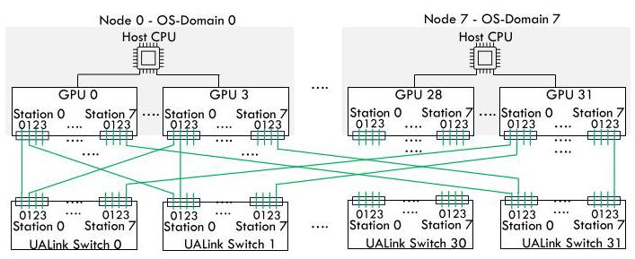
Figure 1: A multi-node multi-gpu system connected over a UALink network (For clarity, certain of the UALink Links have been shown while the other links are omitted).
图1：通过UALink网络连接的多节点多GPU系统（为清晰起见，仅展示了部分UALink链路，其他链路已省略）
2.3 Reverse Address Translation
Historically, GPUs within a system used System Physical Addresses (SPAs) to reference memory. With inter-node communication over UALink, a new addressing model-the Network Physical Address (NPA)-is introduced, as illustrated in Figure 2. When a GPU initiates a memory access, its virtual address is translated by the GPU's Memory Management Unit (MMU) into either an NPA, for accessing memory on a remote node (i.e., a different OS domain), or an SPA, for accesses within the same OS domain. SPA remains the standard for local memory accesses. For inter-node accesses, the target GPU must convert the incoming NPA back to the corresponding SPA before performing the memory operation. This Reverse Address Translation (NPA \(\rightarrow\) SPA) is handled by the Link MMU on the target GPU, which traverses a series of translation modules to correctly resolve the network-level address to a local system-physical address (Figure 2).
历史上，系统内的 GPU 使用系统物理地址（SPA）来引用内存。随着通过 UALink 进行节点间通信，一种新的寻址模型——网络物理地址（NPA）被引入，如图 2 所示。当 GPU 发起内存访问时，其虚拟地址由 GPU 的内存管理单元（MMU）转换为 NPA（用于访问远程节点，即不同操作系统域的内存）或 SPA（用于同一操作系统域内的访问）。SPA 仍然是本地内存访问的标准。对于节点间访问，目标 GPU 必须在执行内存操作之前将传入的 NPA 转换回对应的 SPA。这种反向地址转换（NPA \(\rightarrow\) SPA）由目标 GPU 上的链路 MMU 处理，它遍历一系列转换模块，将网络级地址正确解析为本地系统物理地址（图 2）。
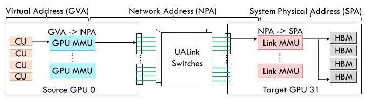
Figure 2: Reverse Address Translation of a Network Physical Address (NPA) to a System Physical Address (SPA) at the target GPU for inter-node accesses.
图 2：目标 GPU 上节点间访问时，将网络物理地址（NPA）反向转换为系统物理地址（SPA）
2.4 Baseline System
While the UALink specification [98] describes the Reverse Address Translation and the Link MMU at the target GPU that performs translation, it provides little detail on the internal translation modules themselves. Moreover, since this is the first work to characterize this type of reverse address translation at the target node, no prior studies exist for use as a baseline. To address this, we adopt a structural approach similar to prior GPU IOMMU designs [61] for our evaluation and impact analysis. Figure 3 illustrates the translation hierarchy used throughout this paper. Each UALink station has a private L1 Link TLB. Accesses that miss in the L1 TLB are forwarded to a shared L2 Link TLB, which services traffic from all UALink stations. Misses at the L2 level are sent to page walk caches, and if still unresolved, to the page table walker (PTW), which is also shared across all UALink traffic at the target GPU. The Link TLB hierarchy employs a mostly-inclusive policy [13]: when the PTW is triggered due to an L2 miss, the translation is populated into both the L1 and L2 TLBs. Conversely, evictions from a lower-level TLB do not require invalidation in higher-level TLBs.
虽然UALink规范[98]描述了目标GPU端的反向地址转换及执行转换的链路MMU，但对内部转换模块本身的描述却很少。此外，由于这是首次对目标节点上的此类反向地址转换进行特性分析，目前尚无相关研究可作为基线。为了解决这一问题，我们采用与先前GPU IOMMU设计[61]相似的结构化方法，进行评估和影响分析。图3展示了本文所使用的转换层次结构。每个UALink站点都有一个私有的L1链路TLB。在L1 TLB中未命中的访问会被转发到共享的L2链路TLB，后者为所有UALink站点的流量提供服务。L2层次的缺失则被发送到页表遍历缓存，如果仍未解决，则交给页表遍历器（PTW），该遍历器同样由目标GPU上所有UALink流量共享。该链路TLB层次结构采用了一种大多数包含策略[13]：当因L2缺失而触发PTW时，转换结果会被同时填充到L1和L2 TLB中。反之，从较低层级TLB中的逐出操作，并不需要使较高层级TLB中的对应条目失效。
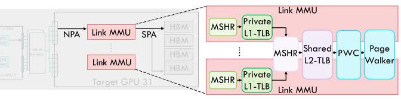
Figure 3: Our baseline Reverse Address Translation hierarchy for performing Reverse Address Translation at the Target GPU node.
图 3：我们在目标 GPU 节点执行反向地址转换的基线反向地址转换层次结构。
2.5 Collectives In Distributed ML Models
Large ML models use parallelism strategies including tensor parallelism, model parallelism, data parallelism, fully sharded data parallelism (FSDP), and ZeRO [4, 12, 30, 38, 39, 49, 57, 62, 70, 82, 91] to avoid data duplication across distributed nodes. However, such strategies result in additional collective communication which is used to coordinate and share data during training (or inference) to exploit parallelism across the multiple nodes using various communication algorithms [27, 96].
大型机器学习模型采用包括张量并行、模型并行、数据并行、全分片数据并行（FSDP）及ZeRO [4, 12, 30, 38, 39, 49, 57, 62, 70, 82, 91]在内的并行策略，以避免分布式节点间的数据重复。然而，这些策略会引入额外的集体通信，用于在训练（或推理）过程中协调和共享数据，从而通过各种通信算法[27, 96]在多个节点间利用并行性。
AlltoAll [22] communication is a fundamental collective operation in distributed ML workloads. It is widely used in model parallelism, for exchanging activations and gradients across layers, and in Mixture-of-Experts (MoE) architectures, for routing tokens to different expert sub-layers. In MoEs, All-to-All collectives occur twice per layer: once for dispatching inputs to the experts and again for gathering outputs, forming a critical path that can account for a significant portion of execution time [47]. Given its prevalence and the performance impact observed in modern large-scale models, we focus our evaluation on All-to-All operations, which represent a common and performance-critical communication pattern in distributed ML.
AlltoAll [22] 通信是分布式机器学习工作负载中的一种基础集合通信操作。它广泛应用于模型并行中，用于跨层交换激活值与梯度，也用于混合专家（MoE）架构中，将令牌路由到不同的专家子层。在 MoE 中，All-to-All 集合通信在每个层发生两次：一次将输入分派给专家，另一次收集输出，形成一条关键路径，可能占据执行时间的很大一部分 [47]。鉴于其普遍性以及在现代大规模模型中观察到的性能影响，我们将评估重点放在 All-to-All 操作上，它代表了分布式机器学习中一种常见且对性能至关重要的通信模式。
In the following sections, we outline our methodology, which forms the basis for our characterization study of the performance overheads of Reverse Address Translation at the target node on All-to-All collective communication workloads.
在接下来的章节中，我们将概述研究方法，这构成了我们对目标节点上反向地址转换在全交换集体通信工作负载中的性能开销进行表征研究的基础。
3 Methodology
We evaluate the most common and high traffic collective: All-to-All that is generated from the MSCCLang frameworks [27]. To evaluate, we use the ASTRA-sim simulator [103]. AstraSim runs isolated collective communication kernels described in XML or JSON formats, often generated by synthesizers, and integrates workload to traffic generation with a variety of network backends. Specifically, we use the Omnet++ [100] framework as our network simulation backend. Omnet++ is a discrete-event, component-based simulation framework that enables detailed modeling of packet-level network behavior, including link contention, queueing, congestion control, flow-level crediting, and routing protocols. Its modular architecture allows integration of custom network models, such as the UALink interconnect used in our study. In our setup, GPUs are connected via a railed, single-level Clos backbone network of high-radix Ultra Accelerator Link (UAL) switches. While UALink parameters are evolving, our simulation uses the most up-to-date bandwidth and latency values, as listed in Table1. Detailed baseline system specifications are presented in Table 1. We evaluate a page size of 2MB.
我们评估了由MSCCLang框架[27]生成的最常见且流量最大的集合通信操作：全交换（All-to-All）。评估基于ASTRA-sim模拟器[103]进行。ASTRA-sim运行以XML或JSON格式描述的、通常由合成器生成的独立集合通信内核，并将工作负载的流量生成与多种网络后端相集成。具体来说，我们采用Omnet++[100]框架作为网络仿真后端。Omnet++是一个离散事件、基于组件的仿真框架，支持对数据包级网络行为进行详细建模，包括链路竞争、排队、拥塞控制、流级信用管理及路由协议。其模块化架构允许集成自定义网络模型，如本研究中使用的UALink互连。在我们的设置中，GPU通过由高基数超级加速器链路（UAL）交换机构成的轨道化单级Clos骨干网络连接。尽管UALink参数仍在演进，我们的仿真采用了表1所列的最新带宽和延迟数值。详细的基准系统规格见表1。我们评估的页面大小为2MB。
The workloads were generated with MSCCLang example scripts for the all-pairs/direct algorithm [3]. All schedules for MSCCLang are two-sided and use remote store instructions. In all measurements, the "size" of the collective is the larger size of a single GPU's input or output buffer. In the all-pairs algorithm, at each GPU source, a unique WG transmits a chunk of data to each destination. Since this work is focused on communication collectives that do not have data reuse in caches, we assume memory accesses missing in all cache levels and a constant 120ns latency for a request to traverse the cache hierarchy from a CU to the NoC fabric.
工作负载是通过 MSCCLang 示例脚本为 all-pairs/direct 算法生成的 [3]。MSCCLang 的所有调度均为双端模式，并使用远程存储指令。在所有测量中，集合操作的“大小”取单个 GPU 的输入或输出缓冲区中的较大值。在 all-pairs 算法中，每个 GPU 源上都有一个唯一的 WG 向每个目的地发送一块数据。由于本文关注的是缓存中无数据重用的通信集合操作，我们假设内存访问在所有缓存层级中均缺失，并假定请求从 CU 穿越缓存层次到达 NoC 互连结构的延迟恒定为 120 ns。
Table 1: Simulation Setup
表 1：仿真设置
| System | |
| #GPUs | 8, 16, 32, 64 (4 GPUs/node) |
| Inter-GPU Link | UALink single-level Clos network [19] |
| Local Data Fabric | 120ns latency |
| Per GPU Config | |
| Dies | 8x compute, 2x I/O [6] |
| Compute Unit | 2.2 GHz, 256 per GPU [6] |
| HBM | 150ns access latency [73] |
| Reverse Translation Config [26, 66] | |
| L1 Link TLB | 32-entry [61], fully-assoc, 50 ns hit lat [50], private/UALink Station, 256-entry MSHR |
| L2 Link TLB | 512 entry [61], 2-way set assoc, 100 ns hit lat [50], LRU replacement policy, shared across UALink stations per GPU |
| Link MMU [66] | 5-level page table with page walk cache (16,32,64,128 entries [61], 2-way, 50ns latency) , shared walker, 100 parallel PTWs |
| Inter-GPU UALink Configuration | |
| UALink Switch | Single level clos, 300ns latency [65, 98] |
| UALink Station | 16 per GPU, 4 lanes per station (combined as 1 x4 port or link), 200Gbps effective BW/lane [98] |
| UALink Link | 800 Gbps cumulative bandwidth, 300 ns die-to-die latency [25] |
4 Evaluation and Analysis
4.1 Reverse Address Translation Overheads
To evaluate the impact of Reverse Address Translation on multinode, multi-GPU performance, we compare our baseline configuration against an ideal setup, where Reverse Address Translation introduces zero overhead. While the ideal case is not practically achievable, it serves as an upper-bound for potential optimization. Figure 4 presents performance degradation across GPU pod sizes ranging from 8 to 64 GPUs and collective communication sizes from 1MB to 4GB.
为评估反向地址转换对多节点、多 GPU 性能的影响，我们将基线配置与理想设置进行比较，后者中反向地址转换不引入任何开销。尽管理想情况在实际中无法实现，但它可作为潜在优化的理论上限。图 4 展示了在 GPU 集群规模从 8 到 64 个 GPU、集合通信大小从 1MB 到 4GB 的范围内的性能下降情况。
We observe that small collectives (1MB) experience up to \({1.4} \times\) performance degradation, while larger collectives (16MB) incur only around \({1.1} \times\) overhead. This trend indicates that Reverse Address
我们观察到，小规模集合通信（1MB）性能下降高达\({1.4} \times\)，而大规模集合通信（16MB）仅产生约\({1.1} \times\)的开销。这一趋势表明，反向地址
Translation overhead is most pronounced for small collective sizes, where each request is more likely to encounter cold page table walks, and gradually diminishes as collective size increases. The results highlight a critical interplay between request volume and translation latency: larger collectives naturally amortize the cost of translation across many requests, while smaller collectives are disproportionately affected by individual high-latency translations.
翻译开销在小规模集合操作中最为突出，此时每个请求更可能遭遇冷页表遍历，并且随着集合操作规模的增大而逐渐减小。这些结果突显了请求量与转换延迟之间关键的相互作用：较大的集合操作自然地将转换成本分摊到众多请求之上，而较小的集合操作却不成比例地受到个别高延迟转换的影响。
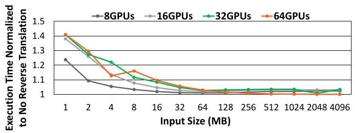
Figure 4: Performance overhead of Reverse Address Translation, normalized to an ideal configuration with zero Reverse Address Translation overhead, evaluated on systems with eight and up to 64 GPUs with AlltoAll collective sizes ranging from 1 MB to 4 GB.
图4：反向地址转换的性能开销，以零反向地址转换开销的理想配置为基准进行归一化，在配备8个到64个GPU的系统上评估，AlltoAll集合大小从1 MB到4 GB不等。
4.2 Quantifying Per-Request Latency
To understand the observed performance trends, we analyze the average Reverse Address Translation latency per request for the same sweep of GPU pod sizes and collective sizes (Figure 5). The results confirm that small collectives experience high per-request Reverse Address Translation latency due to cold TLBs and page table walks, whereas larger collectives benefit from warmed caches and TLB entries, which reduce latency significantly.
为了理解观察到的性能趋势，我们分析了在相同GPU pod规模和集合大小范围内，每次请求的平均反向地址转换延迟（图5）。结果证实，小规模集合由于冷TLB和页表遍历，每次请求的反向地址转换延迟较高；而大规模集合受益于预热缓存和TLB条目，延迟显著降低。
Figure 6 provides a stacked breakdown of the round-trip latency per request for a 16-GPU system. For 1MB collectives, up to ~30% of total request latency is spent performing Reverse Address Translation. This fraction steadily decreases with increasing collective size, reinforcing the observation that Reverse Address Translation overhead is amortized more effectively in larger collectives. These figures illustrate not only the absolute latency contributions of Reverse Address Translation but also how its relative significance diminishes with larger data movement.
图6展示了16 GPU 系统中每个请求往返延迟的堆叠式细分。对于 1MB 的集合通信，总请求延迟中高达约 30% 用于执行反向地址转换。该比例随着集合通信规模增大而稳步下降，进一步印证了反向地址转换开销在更大规模集合通信中能更有效地被平摊的观察。这些图不仅揭示了反向地址转换在绝对延迟上的贡献，也展现了其相对重要性如何随着数据移动量增大而降低。
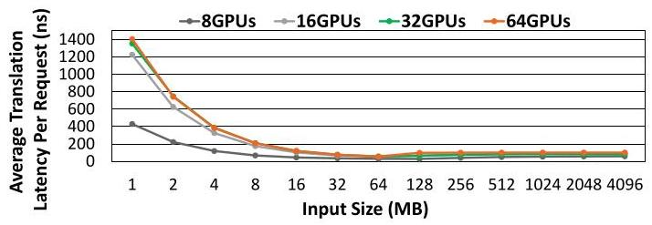
Figure 5: Average Reverse Address Translation latency per request, evaluated on systems with eight and up to 64 GPUs with AlltoAll collective sizes ranging from 1 MB to 4 GB.
图5：每请求平均反向地址转换延迟，在配备8至64个GPU的系统上评估，AlltoAll集合通信大小范围为1 MB至4 GB。
4.3 Hierarchical Translation Scenarios
Next, we examine the sources of Reverse Address Translation overhead by investigating the translation hierarchy at the target GPU node. Figure 7 shows the breakdown of all inter-node requests originating from a source GPU in a 16-GPU system. Over 90% of requests hit the L1-MSHR; however, this metric alone is insufficient to predict latency, as requests may still stall due to pending page walks at lower levels of the hierarchy.
接下来，我们通过研究目标GPU节点上的转换层次结构，来检查逆向地址转换开销的来源。图7展示了一个16-GPU系统中，源自某个源GPU的所有节点间请求的细分情况。超过90%的请求命中L1-MSHR；然而，仅凭这一指标不足以预测延迟，因为请求仍可能因较低层次结构中待处理的页表遍历而停滞。
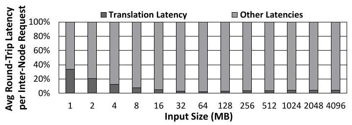
Figure 6: Fraction of the round trip latency per request spent in performing Reverse Address Translation and other latencies evaluated for 16-GPU configuration and varying AlltoAll collective size.
图6：在16-GPU配置和变化的AlltoAll集合大小下，每个请求的往返延迟中用于执行反向地址转换和其他延迟的比例
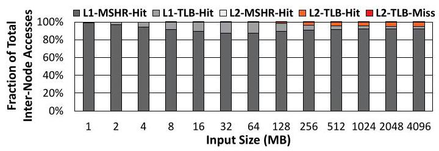
Figure 7: Stacked breakdown of Reverse Address Translation hits and misses at target GPU translation modules for internode requests in a 16-GPU system under varying AlltoAll sizes.
图7：在16-GPU系统中，针对不同AlltoAll数据量，节点间请求在目标GPU地址转换模块处的反向地址转换命中与未命中的堆叠细分
Figure 8 further decomposes L1-MSHR hits into hits-under-miss and misses at subsequent hierarchy levels. For 1MB collectives, L2-TLB misses and L2-TLB-hit-under-miss scenarios dominate, reflecting cold page walks at the lowest hierarchy levels. As input size increases (2-64MB), L1-TLB hits gradually dominate, indicating that initial page walks warm the translation hierarchy. At \({64}\mathrm{{MB}}\) , the 32-entry L1-TLB reaches capacity; however, overall performance remains stable because L2-TLB hits compensate for the reduction in L1-TLB hits. This shows that hierarchical caching effectively mitigates performance degradation even when lower-level caches are saturated..
图8进一步将L1-MSHR命中情况细分为未命中下的命中（hits-under-miss）与后续层级未命中。对于1MB规模的集合通信，L2-TLB未命中及L2-TLB未命中下的命中场景占据主导，反映出最低层级上的冷页表遍历。随着输入规模增大（2-64MB），L1-TLB命中逐渐占优，表明初始页表遍历已预热了地址转换层次。在\({64}\mathrm{{MB}}\)时，32项的L1-TLB已达容量上限；然而，由于L2-TLB命中补偿了L1-TLB命中的减少，整体性能保持稳定。这表明，即使低层缓存已饱和，层次化缓存仍能有效缓解性能下降。
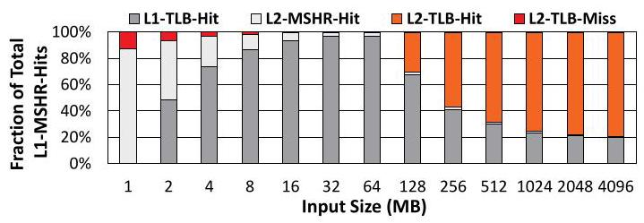
Figure 8: Stacked breakdown of L1-MSHR hit-under-miss and miss scenarios at target GPU translation modules for all inter-node requests from a source GPU in a 16-GPU system across varying AlltoAll sizes.
图8：在16 GPU系统中，针对不同AlltoAll大小，来自源GPU的所有节点间请求在目标GPU地址转换模块的L1-MSHR未命中下命中与未命中场景的堆叠分解图
4.4 Per request Reverse Address Translation Latency Patterns
We next analyze per-request Reverse Address Translation latency for small (1MB) and medium (256MB) collectives, as shown in Figures 9 and 10.
接下来，我们分析小型（1MB）和中等（256MB）集合操作的逐请求反向地址转换延迟，如图9和图10所示。
For 1MB collectives, all requests originating from the source GPU encounter high Reverse Address Translation latency due to cold page table walks across destination GPUs. These initial misses generate the severe performance degradation observed in Figure 4, as each request must traverse the full translation hierarchy. At this small input size, TLBs and page walk caches are largely cold, so latency is dominated by the cost of resolving new pages.
对于1MB的集合操作，所有从源GPU发出的请求都会因为跨目标GPU的冷页表遍历而遭遇高昂的反向地址转换延迟。这些初始缺失导致了图4中观察到的严重性能下降，因为每个请求都必须遍历完整的转换层次结构。在这种小输入规模下，TLB和页表遍历缓存大部分处于冷状态，因此延迟主要由解析新页面的开销所主导。
In contrast, the 256MB collective exhibits multiple latency spikes corresponding to requests accessing cold pages across destination GPUs. The first spike represents initial cold misses across all destinations, where page table walks occur for the first time. After these entries are populated in the destination TLBs, subsequent accesses largely hit warmed TLB entries, significantly reducing Reverse Address Translation latency. Additional smaller spikes occur when request offsets exceed page boundaries: these accesses partially hit in the page walk caches, which avoid full table walks and mitigate latency.
相比之下，256MB 集体操作表现出多次延迟尖峰，这些尖峰对应着跨越目标 GPU 访问冷页的请求。第一个尖峰代表所有目标上的初始冷缺失，此时页表遍历首次发生。当这些目标 TLB 条目被填充后，后续访问大多命中已预热的 TLB 条目，从而显著降低了反向地址转换延迟。当请求偏移超过页边界时，会出现额外的小幅尖峰：这些访问部分命中页遍历缓存，避免了完整的表遍历并缓解了延迟。
This spike pattern reflects the streaming access pattern of custom collectives: each page is accessed sequentially with strides, exploiting spatial locality within the page. Once the stride moves to a new page, the old page is rarely reused, demonstrating minimal temporal locality. Importantly, this means that at any point, the destination GPU sees at most \(1 \times\) (number of GPUs) pages simultaneously, as each participating GPU contributes only one active page at a time. This insight explains why L2-TLB overprovisioning does not improve performance for these workloads.
这种尖峰模式反映了自定义集合操作的流式访问模式：每个页以跨步方式顺序访问，从而利用了页内的空间局部性。一旦跨步移动到新页，旧页几乎不会被重用，显示出极小的时间局部性。重要的是，这意味着在任何时刻，目标GPU最多同时看到 \(1 \times\)（GPU数量）个页面，因为每个参与的GPU每次只贡献一个活动页。这一见解解释了为何L2-TLB过度配置对这些工作负载无法提升性能。
Overall, these observations highlight that Reverse Address Translation overhead is dominated by initial cold misses. Hierarchical caching-through TLBs and page walk caches-effectively amortizes translation costs across subsequent requests. Furthermore, the combination of stride-based accesses and streaming behavior ensures that once page entries are warmed, repeated accesses are rare, stabilizing per-request latency for larger collectives.
总体而言，这些观察表明，反向地址转换的开销主要来自初始的冷缺失。通过TLB和页表遍历缓存的层次化缓存，有效地将转换成本分摊到后续请求上。此外，基于步幅的访问和流式行为相结合，确保一旦页表项预热完毕，重复访问就很少发生，从而稳定了较大规模集合操作的每请求延迟。
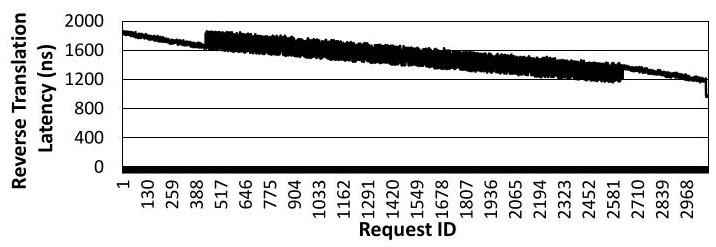
Figure 9: Reverse Address Translation latency per request plotted for all request trace originating from source GPU node for a 1MB input size and 16 GPU configuration.
图9：针对源自源GPU节点的所有请求，绘制了1MB输入大小和16 GPU配置下的每次请求反向地址转换延迟。
4.5 Impact of L2-TLB Sizes
The preceding analysis indicates that custom collectives access each page in a mostly streaming manner: requests stride through the data within a page, exploiting spatial locality, but once the stride moves to a new page, the previously accessed page is rarely revisited. As a result, temporal locality is minimal. Consequently, the L2-TLB only needs to accommodate the number of pages simultaneously accessed across all participating GPUs; beyond that, increasing its size provides little to no performance benefit.
前述分析表明，自定义集合操作主要以流式方式访问每个页面：请求以跨步方式遍历页面内的数据，利用空间局部性，但一旦跨步移至新页面，之前访问的页面很少被再次访问。因此，时间局部性极小。相应地，L2-TLB只需容纳所有参与GPU同时访问的页面数量；超出这一规模，增大其容量几乎不带来性能提升。
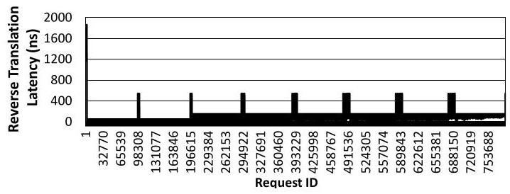
Figure 10: Reverse Address Translation latency per request for all request trace originating from source GPU node for a 256MB input size and 16-GPU configuration.
图10：对于所有源自源GPU节点的请求轨迹，在输入大小为256MB、配备16个GPU的配置下，每次请求的反向地址转换延迟。
To validate this, we vary L2-TLB sizes from 16 to 32, 64, 512, and 32,768 entries and measure performance for a 16MB input size on 32 GPU configuration (Figure 11). Even with a small L2-TLB of 32 entries-equal to the number of GPUs accessing a page simultaneously-performance remains stable. Larger L2-TLB sizes do not improve performance further, confirming that over-provisioning L2-TLBs for ML collective workloads is unnecessary. This insight suggests that modest L2-TLB capacities suffice to sustain high-performance collective communication, reducing hardware cost and complexity without impacting runtime efficiency.
为验证这一点，我们将 L2-TLB 大小从 16 个条目变化至 32、64、512 和 32,768 个条目，并在 32 GPU 配置下测量了 16MB 输入大小的性能（图 11）。即使使用仅 32 条目的较小 L2-TLB——等于同时访问某一页面的 GPU 数量——性能依然保持稳定。更大的 L2-TLB 容量并未进一步提升性能，这证实了针对机器学习集体通信负载过度配置 L2-TLB 是不必要的。这一发现表明，适度的 L2-TLB 容量便足以维持高性能的集体通信，从而在不妨碍运行时效率的同时降低硬件成本与复杂度。
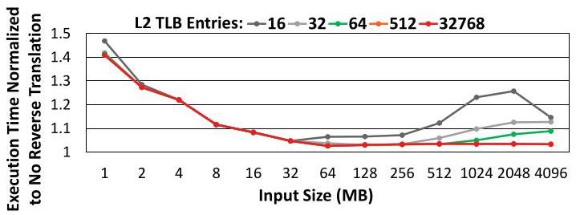
Figure 11: Performance overhead of Reverse Address Translation, normalized to an ideal configuration with zero Reverse Address Translation overhead, evaluated on 32 GPUs with AlltoAll collective sizes ranging from 1 MB to 4 GB with varying L2-TLB sizes.
图11：反向地址转换的性能开销，以零反向地址转换开销的理想配置为基准进行归一化，在32个GPU上评估，AlltoAll集合大小从1 MB到4 GB，L2-TLB大小各异。
5 Summary
Based on our analysis of the most traffic-intensive AlltoAll collectives commonly used in ML workloads, we identify two key observations: 1) Cold misses dominate small-collective performance: For latency-sensitive collectives, especially small ones (e.g., 1MB), cold TLB misses contribute disproportionately to total latency. Our measurements show that Reverse Address Translation overhead can degrade performance by up to \({1.4} \times\) for \(1\mathrm{{MB}}\) collectives, and this impact could be even higher for smaller collectives. This effect arises because each request must traverse the full page translation hierarchy, including potentially multiple page table walks across destination GPUs. These cold misses dominate the critical path for latency-sensitive workloads, making them a primary target for optimization. 2) Minimal temporal locality reduces L2-TLB requirements: Due to the streaming access patterns of custom collectives-where requests stride sequentially across pages, rarely revisiting previous pages-the effective temporal locality is minimal. Consequently, L2-TLB sizes exceeding the number of participating GPUs provide negligible performance improvement. Modest L2- TLB capacities that accommodate at least one active page per GPU suffice to sustain high throughput, reducing the need for costly over-provisioning.
基于我们对机器学习工作负载中常见的流量密集型 AlltoAll 集合通信的分析，我们识别出两个关键观察结果：1) 冷缺失主导小规模集合通信的性能：对于延迟敏感的集合通信，特别是小规模（例如 1MB）的场景，冷 TLB 缺失对总延迟的贡献不成比例。我们的测量显示，对于 \(1\mathrm{{MB}}\) 的集合通信，反向地址转换开销可能导致性能下降高达 \({1.4} \times\)，且对于更小规模的集合通信，这一影响可能更大。该效应源于每个请求都必须遍历完整的页转换层次结构，包括在目标 GPU 上可能发生的多次页表遍历。这些冷缺失主导了延迟敏感型工作负载的关键路径，使其成为优化的首要目标。2) 最小的时间局部性降低了对 L2-TLB 的需求：由于自定义集合通信的流式访问模式——请求按页顺序跨越，极少回访先前的页面——有效的时间局部性极低。因此，超过参与 GPU 数量的 L2-TLB 容量带来的性能提升可忽略不计。支持每个 GPU 至少一个活跃页面的适中 L2-TLB 容量足以维持高吞吐量，从而减少了对成本高昂的过度配置的需求。
These findings have direct implications for ML workloads. While training workloads often process large batches that saturate bandwidth, amortizing point-to-point network latency, inference workloads are increasingly latency-sensitive, often operating on small batches. Inference can account for the majority of computational resources and costs in large-scale deployments at major tech firms such as Meta, Amazon, and and Google [76, 104]. Network latency in inference can consume up to \({20}\%\) of total runtime for modern LLMs [32, 40], making Reverse Address Translation overhead in small collectives a critical performance bottleneck.
这些发现对机器学习工作负载有直接影响。训练工作负载通常处理大批量数据，这会饱和带宽，从而摊薄点对点网络延迟；而推理工作负载则越来越延迟敏感，通常以小批量运行。在 Meta、Amazon 以及以及 Google [76, 104] 等主要科技公司的大规模部署中，推理可能占据大部分计算资源和成本。现代大型语言模型的推理中，网络延迟可能消耗高达运行总时间的 \({20}\%\) [32, 40]，这使得小规模集合通信中的反向地址转换开销成为关键的性能瓶颈。
6 Observations and Opportunities
Based on these insights, we propose two avenues for mitigating Reverse Address Translation overhead in latency-sensitive collectives: 1) Pre-Translation and Fused Kernels: Integrate pre-translation requests directly into computation kernels, allowing page table entries to be fetched ahead of the corresponding data access. By overlapping pre-translation with computation, the effective latency for subsequent requests can be hidden. This approach is particularly effective for ML based collectives where communication patterns are predictable and stride-based. 2) Software-Driven TLB Prefetching: Implement software-guided prefetching mechanisms that predictively populate TLBs with pages likely to be accessed next. Prefetching strategies could leverage static memory layout knowledge of input, output, and scratch buffers, or dynamic profiling to detect repetitive access patterns across GPUs. This reduces cold-miss penalties without increasing hardware TLB sizes.
基于这些见解，我们提出了两条途径来缓解延迟敏感的集合通信中的反向地址转换开销：1) 预翻译与融合内核：将预翻译请求直接集成到计算内核中，允许页表项在相应的数据访问之前被获取。通过将预翻译与计算重叠，可以隐藏后续请求的有效延迟。这种方法对于通信模式可预测且基于跨步的机器学习集合通信特别有效。2) 软件驱动的TLB预取：实现软件引导的预取机制，预测性地将可能接下来被访问的页面填充到TLB中。预取策略可以利用对输入、输出和暂存缓冲区的静态内存布局知识，或通过动态分析来检测跨GPU的重复访问模式。这可以在不增加硬件TLB大小的情况下降低冷未命中代价。
In summary, our analysis reveals that small, latency-sensitive collectives suffer heavily from cold TLB misses, whereas L2-TLB over-provisioning provides little benefit due to minimal temporal locality. Optimizing Reverse Address Translation performance in small collectives is therefore crucial, especially for inference-heavy ML workloads. The technical opportunities outlined-ranging from pretranslation fused kernels to predictive page table replication-provide concrete directions to reduce Reverse Address Translation overhead, improve end-to-end collective performance, and unlock more efficient multi-GPU deployments for modern AI workloads.
总之，我们的分析表明，小型且对延迟敏感的集合通信会因冷 TLB 缺失而受到严重影响，而 L2-TLB 的过度配置由于极小的时间局部性，收益甚微。因此，优化小型集合通信中的反向地址转换性能至关重要，尤其对于推理密集型机器学习工作负载。所概述的技术机遇——从预翻译融合内核到预测性页表复制——提供了减少反向地址转换开销、提升端到端集合通信性能并为现代 AI 工作负载解锁更高效多 GPU 部署的具体方向。
7 Conclusion
We analyzed Reverse Address Translation overheads in multi-node, multi-GPU systems, focusing on AlltoAll collectives for ML workloads. Our study shows that cold TLB misses dominate latency for small collectives, causing up to \({1.4} \times\) performance degradation, whereas larger collectives benefit from warmed caches and L2-TLB capacity is rarely a bottleneck. To address this, we propose two avenues for future exploration: (i) pre-translation fused kernels, which overlap address translation with computation by initiating translations before communication kernels start, and (ii) software-guided TLB prefetching, which proactively populates predictive page entries. These approaches aim to mitigate translation latency for small, latency-sensitive collectives in inference workloads. Our analysis highlights the critical importance of Reverse Address Translation optimization for small collectives, where both translation and network latency are significant performance factors, and motivates future work on latency-hiding techniques to improve scalability in modern ML systems.
我们在多节点、多GPU系统中分析了反向地址转换开销，重点关注机器学习工作负载中的AlltoAll集合操作。我们的研究表明，对于小规模集合操作，冷TLB缺失是延迟的主要来源，导致高达 \({1.4} \times\) 的性能下降；而大规模集合操作受益于已预热的缓存，且二级TLB容量极少成为瓶颈。为解决此问题，我们提出了未来探索的两个方向：(i) 预转换融合内核，在通信内核启动前即发起地址转换，使地址转换与计算重叠；(ii) 软件引导的TLB预取，主动填充预测性页表项。这些方法旨在减少推理工作负载中对小规模、延迟敏感的集合操作的转换延迟。我们的分析强调了针对小规模集合操作优化反向地址转换的极端重要性——其中转换和网络延迟均为显著性能因素，并激发了未来在延迟隐藏技术方面的工作，以提高现代机器学习系统的可扩展性。
References
[1] 2023. Concise: The New Way to Read News. https://www.concise.app
[1] 2023. 《Concise：阅读新闻的新方式》。https://www.concise.app
[2] 2023. Introducing Microsoft 365 Copilot: Your Copilot for Work. https: //blogs.microsoft.com/blog/2023/03/16/introducing-microsoft-365-copilot-your-copilot-for-work/. Accessed: 2023-08-03.
[2] 2023. 介绍 Microsoft 365 Copilot：你的工作助手 Copilot。https://blogs.microsoft.com/blog/2023/03/16/introducing-microsoft-365-copilot-your-copilot-for-work/。访问日期：2023-08-03。
[3] 2025. GitHub - microsoft/msccl-tools: Synthesizer for optimal collective communication algorithms. https://github.com/microsoft/msccl-tools Accessed: Jul. 09,
[3] 2025. GitHub - microsoft/msccl-tools：最优集合通信算法合成器。https://github.com/microsoft/msccl-tools 访问日期：7月9日，
[4] Martín Abadi, Paul Barham, Jianmin Chen, Zhifeng Chen, Andy Davis, Jeffrey Dean, Matthieu Devin, Sanjay Ghemawat, Geoffrey Irving, Michael Isard, Man-junath Kudlur, Josh Levenberg, Rajat Monga, Sherry Moore, Derek G. Murray, Benoit Steiner, Paul Tucker, Vijay Vasudevan, Pete Warden, Martin Wicke, Yuan Yu, and Xiaoqiang Zheng. 2016. TensorFlow: A system for large-scale machine learning. arXiv:1605.08695 [cs.DC] https://arxiv.org/abs/1605.08695
[4] Martín Abadi、Paul Barham、Jianmin Chen、Zhifeng Chen、Andy Davis、Jeffrey Dean、Matthieu Devin、Sanjay Ghemawat、Geoffrey Irving、Michael Isard、Manjunath Kudlur、Josh Levenberg、Rajat Monga、Sherry Moore、Derek G. Murray、Benoit Steiner、Paul Tucker、Vijay Vasudevan、Pete Warden、Martin Wicke、Yuan Yu 和 Xiaoqiang Zheng。2016。TensorFlow：大规模机器学习系统。arXiv:1605.08695 [cs.DC] https://arxiv.org/abs/1605.08695
[5] Inc. Advanced Micro Devices. 2023. RCCL. https://github.com/ ROCmSoftwarePlatform/rccl.
[5] 超威半导体公司. 2023. RCCL. https://github.com/ ROCmSoftwarePlatform/rccl.
[6] Advanced Micro Devices, Inc. 2025. AMD Instinct MI350X GPU Product Brief. https://www.amd.com/content/dam/amd/en/documents/instinct-tech-docs/ product-briefs/amd-instinct-mi350x-gpu-brochure.pdf. Accessed: 2025-08-16.
[6] Advanced Micro Devices, Inc. 2025. AMD Instinct MI350X GPU Product Brief. https://www.amd.com/content/dam/amd/en/documents/instinct-tech-docs/ product-briefs/amd-instinct-mi350x-gpu-brochure.pdf. 访问日期：2025-08-16.
[7] Palwisha Akhtar, Erhan Tezcan, Fareed Mohammad Qararyah, and Didem Unat. 2020. ComScribe: identifying intra-node GPU communication. In International Symposium on Benchmarking, Measuring and Optimization. Springer, 157-174.
[7] Palwisha Akhtar, Erhan Tezcan, Fareed Mohammad Qararyah 和 Didem Unat. 2020. ComScribe：识别节点内 GPU 通信. 见国际基准测试、测量与优化研讨会. Springer, 157-174.
[8] Takuya Akiba, Shuji Suzuki, and Keisuke Fukuda. 2017. Extremely Large Minibatch SGD: Training ResNet-50 on ImageNet in 15 Minutes. CoRR abs/1711.04325 (2017). arXiv:1711.04325 http://arxiv.org/abs/1711.04325
[8] Takuya Akiba, Shuji Suzuki, 和 Keisuke Fukuda. 2017. 极大迷你批次随机梯度下降：在15分钟内完成ImageNet上的ResNet-50训练. CoRR abs/1711.04325 (2017). arXiv:1711.04325 http://arxiv.org/abs/1711.04325
[9] Rajesh Arsid. 2025. Ultra Ethernet and UALink: Next-Generation Interconnects for AI Infrastructure. IJSAT-International Journal on Science and Technology 16, 2 (2025).
[9] Rajesh Arsid. 2025. Ultra Ethernet与UALink：面向人工智能基础设施的下一代互连. IJSAT-国际科学与技术杂志 16, 2 (2025).
[10] Scott Atchley, Christopher Zimmer, John Lange, David Bernholdt, Veronica Melesse Vergara, Thomas Beck, Michael Brim, Reuben Budiardja, Sunita Chan-drasekaran, Markus Eisenbach, Thomas Evans, Matthew Ezell, Nicholas Fron-tiere, Antigoni Georgiadou, Joe Glenski, Philipp Grete, Steven Hamilton, John Holmen, Axel Huebl, Daniel Jacobson, Wayne Joubert, Kim Mcmahon, Elia Merzari, Stan Moore, Andrew Myers, Stephen Nichols, Sarp Oral, Thomas Pap-atheodore, Danny Perez, David M. Rogers, Evan Schneider, Jean-Luc Vay, and P. K. Yeung. 2023. Frontier: Exploring Exascale. In Proceedings of the International Conference for High Performance Computing, Networking, Storage and Analysis (Denver, CO, USA) (SC '23). Association for Computing Machinery, New York, NY, USA, Article 52, 16 pages. doi:10.1145/3581784.3607089
[10] Scott Atchley, Christopher Zimmer, John Lange, David Bernholdt, Veronica Melesse Vergara, Thomas Beck, Michael Brim, Reuben Budiardja, Sunita Chan-drasekaran, Markus Eisenbach, Thomas Evans, Matthew Ezell, Nicholas Fron-tiere, Antigoni Georgiadou, Joe Glenski, Philipp Grete, Steven Hamilton, John Holmen, Axel Huebl, Daniel Jacobson, Wayne Joubert, Kim Mcmahon, Elia Merzari, Stan Moore, Andrew Myers, Stephen Nichols, Sarp Oral, Thomas Pap-atheodore, Danny Perez, David M. Rogers, Evan Schneider, Jean-Luc Vay, and P. K. Yeung. 2023. Frontier: 探索百亿亿次计算 (Frontier: Exploring Exascale). 收录于《国际高性能计算、网络、存储与分析会议论文集》(美国科罗拉多州丹佛市) (SC '23). 美国计算机协会，美国纽约州纽约市，文章编号 52，16 页. doi:10.1145/3581784.3607089
[11] Thomas W. Barr, Alan L. Cox, and Scott Rixner. 2011. SpecTLB: A Mechanism for Speculative Address Translation. SIGARCH Comput. Archit. News (2011).
[11] Thomas W. Barr、Alan L. Cox 和 Scott Rixner. 2011. SpecTLB：一种推测性地址转换机制. SIGARCH Comput. Archit. News (2011).
[12] Tal Ben-Nun and Torsten Hoefler. 2018. Demystifying Parallel and Distributed Deep Learning: An In-Depth Concurrency Analysis. CoRR abs/1802.09941 (2018). arXiv:1802.09941 http://arxiv.org/abs/1802.09941
[12] Tal Ben-Nun 和 Torsten Hoefler. 2018. Demystifying Parallel and Distributed Deep Learning: An In-Depth Concurrency Analysis. CoRR abs/1802.09941 (2018). arXiv:1802.09941 http://arxiv.org/abs/1802.09941
[13] Abishek Bhattacharjee. 2017. Advanced concepts on address translation. Computer architecture-A quantitative approach (6th ed.), John L. Hennessy and David A. Patterson (Eds.). Morgan Kaufmann, Cambridge, MA, USA, Appendix L (2017), 1-69.
[13] Abishek Bhattacharjee. 2017. 地址转换高级概念. 计算机体系结构：量化研究方法（第6版），John L. Hennessy 和 David A. Patterson（编）. Morgan Kaufmann，美国马萨诸塞州剑桥，附录L（2017），1-69.
[14] Abhishek Bhattacharjee. 2017. Translation-Triggered Prefetching. SIGPLAN
[14] Abhishek Bhattacharjee. 2017. 翻译触发预取. SIGPLAN
[15] Abhishek Bhattacharjee, Daniel Lustig, and Margaret Martonosi. 2011. Shared last-level TLBs for chip multiprocessors. In 2011 IEEE 17th International Symposium on High Performance Computer Architecture.
[15] Abhishek Bhattacharjee, Daniel Lustig, Margaret Martonosi. 2011. 用于芯片多处理器的共享末级TLB. 收录于 2011年IEEE第17届高性能计算机体系结构国际研讨会.
[16] Abhishek Bhattacharjee and Margaret Martonosi. 2010. Inter-Core Cooperative TLB for Chip Multiprocessors. In Proceedings of the Fifteenth International Conference on Architectural Support for Programming Languages and Operating Systems (ASPLOS).
[16] Abhishek Bhattacharjee 和 Margaret Martonosi. 2010. 面向芯片多处理器的核间协同TLB. 见第十五届编程语言与操作系统架构支持国际会议 (ASPLOS) 论文集.
[17] A. Borg, J.B. Chen, and N.P. Jouppi. 1992. A Simulation Based Study of TLB Performance. In Proceedings the 19th Annual International Symposium on Computer Architecture (ISCA).
[17] A. Borg, J.B. Chen, and N.P. Jouppi. 1992. 基于仿真的TLB性能研究. 收录于第19届计算机体系结构国际研讨会(ISCA)论文集.
[18] Ali Borji. 2023. Generated Faces in the Wild: Quantitative Comparison of Stable Diffusion, Midjourney and DALL-E 2. arXiv:2210.00586 [cs.CV] https: //arxiv.org/abs/2210.00586
[18] Ali Borji. 2023. 自然场景下的生成人脸：Stable Diffusion、Midjourney 与 DALL-E 2 的定量比较. arXiv:2210.00586 [cs.CV] https: //arxiv.org/abs/2210.00586
[19] Dave Brown and Kent Lusted. 2025. UALink 200G 1.0 Specification Overview: Data Link Layer (DL) and Physical Layer (PL). https://www.ieee802.org/3/ad_ hoc/E4AI/public/25_0624/lusted_e4ai_01_250624.pdf. Accessed: 2025-08-05.
[19] Dave Brown 和 Kent Lusted. 2025. UALink 200G 1.0规范概述：数据链路层（DL）和物理层（PL）. https://www.ieee802.org/3/ad_hoc/E4AI/public/25_0624/lusted_e4ai_01_250624.pdf. 检索日期：2025-08-05.
[20] Tom B. Brown, Benjamin Mann, Nick Ryder, Melanie Subbiah, Jared Kaplan, Prafulla Dhariwal, Arvind Neelakantan, Pranav Shyam, Girish Sastry, Amanda Askell, Sandhini Agarwal, Ariel Herbert-Voss, Gretchen Krueger, Tom Henighan, Rewon Child, Aditya Ramesh, Daniel M. Ziegler, Jeffrey Wu, Clemens Winter, Christopher Hesse, Mark Chen, Eric Sigler, Mateusz Litwin, Scott Gray, Benjamin Chess, Jack Clark, Christopher Berner, Sam McCandlish, Alec Radford, Ilya Sutskever, and Dario Amodei. 2020. Language models are few-shot learners. In Proceedings of the 34th International Conference on Neural Information Processing Systems (Vancouver, BC, Canada) (NIPS '20). Curran Associates Inc., Red Hook, NY, USA, Article 159, 25 pages.
[20] Tom B. Brown, Benjamin Mann, Nick Ryder, Melanie Subbiah, Jared Kaplan, Prafulla Dhariwal, Arvind Neelakantan, Pranav Shyam, Girish Sastry, Amanda Askell, Sandhini Agarwal, Ariel Herbert-Voss, Gretchen Krueger, Tom Henighan, Rewon Child, Aditya Ramesh, Daniel M. Ziegler, Jeffrey Wu, Clemens Winter, Christopher Hesse, Mark Chen, Eric Sigler, Mateusz Litwin, Scott Gray, Benjamin Chess, Jack Clark, Christopher Berner, Sam McCandlish, Alec Radford, Ilya Sutskever, and Dario Amodei. 2020. 语言模型是少样本学习者. 见第34届神经信息处理系统国际会议论文集 (加拿大不列颠哥伦比亚省温哥华) (NIPS '20). Curran Associates Inc., Red Hook, NY, USA, 文章159, 25页.
[21] Tom B. Brown, Benjamin Mann, Nick Ryder, Melanie Subbiah, Jared Kaplan, Prafulla Dhariwal, Arvind Neelakantan, Pranav Shyam, Girish Sastry, Amanda Askell, Sandhini Agarwal, Ariel Herbert-Voss, Gretchen Krueger, Tom Henighan, Rewon Child, Aditya Ramesh, Daniel M. Ziegler, Jeffrey Wu, Clemens Winter, Christopher Hesse, Mark Chen, Eric Sigler, Mateusz Litwin, Scott Gray, Benjamin Chess, Jack Clark, Christopher Berner, Sam McCan-dlish, Alec Radford, Ilya Sutskever, and Dario Amodei. 2020. Language Models are Few-Shot Learners. CoRR abs/2005.14165 (2020). arXiv:2005.14165 https://arxiv.org/abs/2005.14165
[21] Tom B. Brown, Benjamin Mann, Nick Ryder, Melanie Subbiah, Jared Kaplan, Prafulla Dhariwal, Arvind Neelakantan, Pranav Shyam, Girish Sastry, Amanda Askell, Sandhini Agarwal, Ariel Herbert-Voss, Gretchen Krueger, Tom Henighan, Rewon Child, Aditya Ramesh, Daniel M. Ziegler, Jeffrey Wu, Clemens Winter, Christopher Hesse, Mark Chen, Eric Sigler, Mateusz Litwin, Scott Gray, Benjamin Chess, Jack Clark, Christopher Berner, Sam McCandlish, Alec Radford, Ilya Sutskever 和 Dario Amodei. 2020. 语言模型是少样本学习者. CoRR abs/2005.14165 (2020). arXiv:2005.14165 https://arxiv.org/abs/2005.14165
[22] Jehoshua Bruck, Ching-Tien Ho, Shlomo Kipnis, and Derrick Weathersby. 1994. Efficient algorithms for all-to-all communications in multi-port message-passing systems. In Proceedings of the sixth annual ACM symposium on Parallel algorithms and architectures. 298-309.
[22] Jehoshua Bruck, Ching-Tien Ho, Shlomo Kipnis, Derrick Weathersby. 1994. 多端口消息传递系统中全交换通信的高效算法. 见：第六届ACM并行算法与架构年度研讨会论文集，298-309.
[23] Chang Chen, Xiuhong Li, Qianchao Zhu, Jiangfei Duan, Peng Sun, Xingcheng Zhang, and Chao Yang. 2024. Centauri: Enabling Efficient Scheduling for Communication-Computation Overlap in Large Model Training via Communication Partitioning. In Proceedings of the 29th ACM International Conference on Architectural Support for Programming Languages and Operating Systems, Volume 3 (La Jolla, CA, USA) (ASPLOS '24). Association for Computing Machinery, New York, NY, USA, 178-191. doi:10.1145/3620666.3651379
[23] Chang Chen, Xiuhong Li, Qianchao Zhu, Jiangfei Duan, Peng Sun, Xingcheng Zhang, 和 Chao Yang. 2024. Centauri: 通过通信分区实现大模型训练中通信-计算重叠的高效调度. 收录于《第29届ACM国际编程语言与操作系统架构支持会议论文集》，第3卷 (美国加利福尼亚州拉霍亚) (ASPLOS '24). 美国纽约州纽约市: 计算机协会, 178–191. doi:10.1145/3620666.3651379
[24] Aakanksha Chowdhery, Sharan Narang, Jacob Devlin, Maarten Bosma, Gaurav Mishra, Adam Roberts, Paul Barham, Hyung Won Chung, Charles Sutton, Sebastian Gehrmann, Parker Schuh, Kensen Shi, Sashank Tsvyashchenko, Joshua Maynez, Abhishek Rao, Parker Barnes, Yi Tay, Noam Shazeer, Vinodkumar Prab-hakaran, Emily Reif, Nan Du, Ben Hutchinson, Reiner Pope, James Bradbury, Jacob Austin, Michael Isard, Guy Gur-Ari, Pengcheng Yin, Toju Duke, Anselm Levskaya, Sanjay Ghemawat, Sunipa Dev, Henryk Michalewski, Xavier Garcia, Vedant Misra, Kevin Robinson, Liam Fedus, Denny Zhou, Daphne Ippolito, David Luan, Hyeontaek Lim, Barret Zoph, Alexander Spiridonov, Ryan Sepa-ssi, David Dohan, Shivani Agrawal, Mark Omernick, Andrew M. Dai, Thanu-malayan Sankaranarayana Pillai, Marie Pellat, Aitor Lewkowycz, Erica Moreira, Rewon Child, Oleksandr Polozov, Katherine Lee, Zongwei Zhou, Xuezhi Wang, Brennan Saeta, Mark Diaz, Orhan Firat, Michele Catasta, Jason Wei, Kathy Meier-Hellstern, Douglas Eck, Jeff Dean, Slav Petrov, and Noah Fiedel. 2023. PaLM: scaling language modeling with pathways. J. Mach. Learn. Res. 24, 1, Article 240 (Jan. 2023), 113 pages.
[24] Aakanksha Chowdhery、Sharan Narang、Jacob Devlin、Maarten Bosma、Gaurav Mishra、Adam Roberts、Paul Barham、Hyung Won Chung、Charles Sutton、Sebastian Gehrmann、Parker Schuh、Kensen Shi、Sashank Tsvyashchenko、Joshua Maynez、Abhishek Rao、Parker Barnes、Yi Tay、Noam Shazeer、Vinodkumar Prabhakaran、Emily Reif、Nan Du、Ben Hutchinson、Reiner Pope、James Bradbury、Jacob Austin、Michael Isard、Guy Gur-Ari、Pengcheng Yin、Toju Duke、Anselm Levskaya、Sanjay Ghemawat、Sunipa Dev、Henryk Michalewski、Xavier Garcia、Vedant Misra、Kevin Robinson、Liam Fedus、Denny Zhou、Daphne Ippolito、David Luan、Hyeontaek Lim、Barret Zoph、Alexander Spiridonov、Ryan Sepassi、David Dohan、Shivani Agrawal、Mark Omernick、Andrew M. Dai、Thanumalayan Sankaranarayana Pillai、Marie Pellat、Aitor Lewkowycz、Erica Moreira、Rewon Child、Oleksandr Polozov、Katherine Lee、Zongwei Zhou、Xuezhi Wang、Brennan Saeta、Mark Diaz、Orhan Firat、Michele Catasta、Jason Wei、Kathy Meier-Hellstern、Douglas Eck、Jeff Dean、Slav Petrov 与 Noah Fiedel. 2023. PaLM: scaling language modeling with pathways. J. Mach. Learn. Res. 24, 1, Article 240 (Jan. 2023), 113 pages.
[25] Massed Compute. 2025. How does the latency of NVIDIA NVLink compare to other high-speed interconnects like Ethernet? Massed Compute. https: //massedcompute.com/faq-answers/?question=How+does+the+latency+ of+NVIDIA+NVLink+compare+to+other+high-speed+interconnects+like+ Ethernet%3F&utm_source=chatgpt.com
[25] Massed Compute. 2025. NVIDIA NVLink的延迟与其他高速互连（如以太网）相比如何？Massed Compute. https: //massedcompute.com/faq-answers/?question=How+does+the+latency+ of+NVIDIA+NVLink+compare+to+other+high-speed+interconnects+like+ Ethernet%3F&utm_source=chatgpt.com
[26] NVIDIA Corporation. 2022. The NVLink-Network Switch: NVIDIA's Switch Chip for High Communication-Bandwidth Superpods. In Proceedings of the 34th IEEE Hot Chips Symposium (HotChips 34). Stanford, CA, USA. https://hc34.hotchips.org/assets/program/conference/day2/Network%20and%20Switches/ NVSwitch%20HotChips%202022%20r5.pdf
[26] NVIDIA Corporation. 2022. NVLink-Network Switch：NVIDIA 用于高通信带宽超级计算集群的交换芯片。收录于第34届IEEE Hot Chips研讨会 (HotChips 34) 论文集。美国加利福尼亚州斯坦福。https://hc34.hotchips.org/assets/program/conference/day2/Network%20and%20Switches/ NVSwitch%20HotChips%202022%20r5.pdf
[27] Meghan Cowan, Saeed Maleki, Madanlal Musuvathi, Olli Saarikivi, and Yifan Xiong. 2023. MSCCLang: Microsoft Collective Communication Language. In Proceedings of the 28th ACM International Conference on Architectural Support for Programming Languages and Operating Systems, Volume 2 (Vancouver, BC, Canada) (ASPLOS 2023). Association for Computing Machinery, New York, NY, USA, 502-514. doi:10.1145/3575693.3575724
[27] Meghan Cowan、Saeed Maleki、Madanlal Musuvathi、Olli Saarikivi 和 Yifan Xiong。2023 年。《MSCCLang：微软集合通信语言》。收录于《第 28 届 ACM 国际编程语言与操作系统架构支持会议论文集》第 2 卷（加拿大不列颠哥伦比亚省温哥华）（ASPLOS 2023）。美国计算机协会，纽约州纽约市，502–514 页。doi:10.1145/3575693.3575724
[28] Guilherme Cox and Abhishek Bhattacharjee. 2017. Efficient Address Translation for Architectures with Multiple Page Sizes. In Proceedings of the Twenty-Second International Conference on Architectural Support for Programming Languages and Operating Systems (ASPLOS).
[28] Guilherme Cox 和 Abhishek Bhattacharjee。2017。多页大小架构的高效地址转换。见第二十二届编程语言与操作系统架构支持国际会议（ASPLOS）论文集。
[29] Daniele De Sensi, Lorenzo Pichetti, Flavio Vella, Tiziano De Matteis, Zebin Ren, Luigi Fusco, Matteo Turisini, Daniele Cesarini, Kurt Lust, Animesh Trivedi, Duncan Roweth, Filippo Spiga, Salvatore Di Girolamo, and Torsten Hoefler. 2024. Exploring GPU-to-GPU Communication: Insights into Supercomputer Interconnects. In Proceedings of the International Conference for High Performance Computing, Networking, Storage, and Analysis (Atlanta, GA, USA) (SC '24). IEEE Press, Article 33, 15 pages. doi:10.1109/SC41406.2024.00039
[29] Daniele De Sensi, Lorenzo Pichetti, Flavio Vella, Tiziano De Matteis, Zebin Ren, Luigi Fusco, Matteo Turisini, Daniele Cesarini, Kurt Lust, Animesh Trivedi, Duncan Roweth, Filippo Spiga, Salvatore Di Girolamo 和 Torsten Hoefler. 2024. 探索 GPU 到 GPU 通信：超级计算机互连网络的见解. 收录于《高性能计算、网络、存储与分析国际会议论文集》（美国佐治亚州亚特兰大）（SC '24）. IEEE Press, 文章 33, 15 页. doi:10.1109/SC41406.2024.00039
[30] Jeffrey Dean, Greg S. Corrado, Rajat Monga, Kai Chen, Matthieu Devin, Quoc V. Le, Mark Z. Mao, Marc'Aurelio Ranzato, Andrew Senior, Paul Tucker, Ke Yang, and Andrew Y. Ng. 2012. Large scale distributed deep networks. In Proceedings of the 26th International Conference on Neural Information Processing Systems - Volume 1 (Lake Tahoe, Nevada) (NIPS'12). Curran Associates Inc., Red Hook, NY, USA, 1223-1231.
[30] Jeffrey Dean, Greg S. Corrado, Rajat Monga, Kai Chen, Matthieu Devin, Quoc V. Le, Mark Z. Mao, Marc'Aurelio Ranzato, Andrew Senior, Paul Tucker, Ke Yang, and Andrew Y. Ng. 2012. 大规模分布式深度网络. 载于第26届神经信息处理系统国际会议论文集 - 第1卷（内华达州太浩湖）(NIPS'12). Curran Associates Inc., Red Hook, NY, USA, 1223–1231.
[31] Jacob Devlin, Ming-Wei Chang, Kenton Lee, and Kristina Toutanova. 2018. BERT: Pre-training of Deep Bidirectional Transformers for Language Understanding. CoRR abs/1810.04805 (2018). arXiv:1810.04805 http://arxiv.org/abs/ 1810.04805
[31] Jacob Devlin, Ming-Wei Chang, Kenton Lee, 和 Kristina Toutanova. 2018. BERT: 用于语言理解的深度双向Transformer预训练. CoRR abs/1810.04805 (2018). arXiv:1810.04805 http://arxiv.org/abs/ 1810.04805
[32] Ege Erdil. 2025. Inference economics of language models. arXiv preprint arXiv:2506.04645 (2025).
[32] Ege Erdil. 2025. 语言模型的推理经济学. arXiv preprint arXiv:2506.04645 (2025).
[33] Oak Ridge Leadership Computing Facility. 2022. Frontier User Guide - System Overview. https://docs.olcf.ornl.gov/systems/frontier_user_guide.html#id2
[33] Oak Ridge Leadership Computing Facility. 2022. Frontier 用户指南——系统概述. https://docs.olcf.ornl.gov/systems/frontier_user_guide.html#id2
[34] Amel Fatima, Sihang Liu, Korakit Seemakhupt, Rachata Ausavarungnirun, and Samira Khan. 2023. vPIM: Efficient virtual address translation for scalable processing-in-memory architectures. In 2023 60th ACM/IEEE Design Automation Conference (DAC). IEEE, 1-6.
[34] Amel Fatima、Sihang Liu、Korakit Seemakhupt、Rachata Ausavarungnirun 和 Samira Khan。2023 年。vPIM：面向可扩展的近存计算架构的高效虚拟地址转换。收录于 2023 年第 60 届 ACM/IEEE 设计自动化会议（DAC）。IEEE，1–6 页。
[35] Amel Fatima, Yang Yang, Yifan Sun, Rachata Ausavarungnirun, and Adwait Jog. 2025. NetCrafter: Tailoring Network Traffic for Non-Uniform Bandwidth Multi-GPU Systems. In Proceedings of the 52nd Annual International Symposium on Computer Architecture (ISCA '25). Association for Computing Machinery, New York, NY, USA, 1064-1078. doi:10.1145/3695053.3731040
[35] Amel Fatima, Yang Yang, Yifan Sun, Rachata Ausavarungnirun 和 Adwait Jog. 2025. NetCrafter：为非均匀带宽多GPU系统定制网络流量. 收录于《第52届国际计算机体系结构年度研讨会 (ISCA '25) 论文集》. 美国计算机协会，美国纽约州纽约市，1064–1078. doi:10.1145/3695053.3731040
[36] Denis Foley and John Danskin. 2017. Ultra-Performance Pascal GPU and NVLink Interconnect. IEEE Micro 37, 2 (2017), 7-17. doi:10.1109/MM.2017.37
[36] Denis Foley 和 John Danskin. 2017. 超高性能 Pascal GPU 与 NVLink 互联. IEEE Micro 37, 2 (2017), 7-17. doi:10.1109/MM.2017.37
[37] Nitin A Gawande, Jeff A Daily, Charles Siegel, Nathan R Tallent, and Abhinav Vishnu. 2020. Scaling deep learning workloads: Nvidia dgx-1/pascal and intel knights landing. Future Generation Computer Systems 108 (2020), 1162-1172.
本文首次系统研究了在由 UALink 等互联结构连接的多 GPU 横向扩展集群中，目标 GPU 端的反向地址转换（NPA 到 SPA 转换）问题。核心研究问题是理解这种目标端地址转换对集合通信（特别是 All‑to‑All 操作）带来的性能开销。
作者扩展了 ASTRA‑sim 模拟器，通过 Omnet++ 网络后端实现了层次化的 Link MMU 与 Link TLB 结构（每站 L1、共享 L2、页表遍历缓存），并在 8 至 64 个 GPU、集合规模从 1 MB 到 4 GB 的系统中进行了评估。主要贡献包括：量化表明，对于小规模、延迟敏感的集合操作，冷 TLB 缺失主导了延迟，造成高达 1.4 倍的性能下降；而对于大规模集合操作，预热后的缓存可以有效摊薄这一开销，且过大的 L2 TLB 带来的收益递减，因为流式访问模式几乎不具备时间局部性——每个 GPU 仅需一个活跃页面。分析进一步揭示，初始的页表遍历会产生很高的单请求延迟，随着条目被缓存，这一延迟会显著降低。
基于这些发现，本文提出两个优化方向：融合式预转换内核，将反向地址转换与计算重叠执行；以及软件引导的 TLB 预取，主动填充条目。主要结论是：反向地址转换的开销对小规模集合操作（常见于推理工作负载）影响尤为显著，有效的缓解策略应侧重于隐藏冷缺失延迟，而非单纯扩大 TLB 结构。
[37] Nitin A Gawande、Jeff A Daily、Charles Siegel、Nathan R Tallent 和 Abhinav Vishnu。2020. 扩展深度学习工作负载：Nvidia DGX-1/Pascal 与 Intel Knights Landing。《Future Generation Computer Systems》108 (2020)，1162–1172.
[38] Amir Gholami, Ariful Azad, Peter Jin, Kurt Keutzer, and Aydin Buluc. 2018. Integrated Model, Batch, and Domain Parallelism in Training Neural Networks. In Proceedings of the 30th on Symposium on Parallelism in Algorithms and Architectures (Vienna, Austria) (SPAA '18). Association for Computing Machinery, New York, NY, USA, 77-86. doi:10.1145/3210377.3210394
[38] Amir Gholami, Ariful Azad, Peter Jin, Kurt Keutzer 和 Aydin Buluc。2018 年。《神经网络训练中的集成模型、批次与领域并行》。载于《第 30 届算法与架构并行性研讨会论文集》（奥地利维也纳）（SPAA '18）。美国纽约州纽约市：计算机器协会，第 77–86 页。doi:10.1145/3210377.3210394
[39] Amir Gholami, Ariful Azad, Kurt Keutzer, and Aydin Buluç. 2017. Integrated Model and Data Parallelism in Training Neural Networks. CoRR abs/1712.04432 (2017). arXiv:1712.04432 http://arxiv.org/abs/1712.04432
[39] Amir Gholami, Ariful Azad, Kurt Keutzer, 与 Aydin Buluç. 2017. 神经网络训练中模型与数据并行的集成. CoRR abs/1712.04432 (2017). arXiv:1712.04432 http://arxiv.org/abs/1712.04432
[40] Raja Gond, Nipun Kwatra, and Ramachandran Ramjee. 2025. TokenWeave: Efficient Compute-Communication Overlap for Distributed LLM Inference. arXiv preprint arXiv:2505.11329 (2025).
[40] Raja Gond、Nipun Kwatra 和 Ramachandran Ramjee. 2025. TokenWeave: 面向分布式 LLM 推理的高效计算-通信重叠. arXiv 预印本 arXiv:2505.11329 (2025).
[41] Priya Goyal, Piotr Dollár, Ross B. Girshick, Pieter Noordhuis, Lukasz Wesolowski, Aapo Kyrola, Andrew Tulloch, Yangqing Jia, and Kaiming He. 2017. Accurate, Large Minibatch SGD: Training ImageNet in 1 Hour. ArXiv abs/1706.02677 (2017).
[41] Priya Goyal, Piotr Dollár, Ross B. Girshick, Pieter Noordhuis, Lukasz Wesolowski, Aapo Kyrola, Andrew Tulloch, 贾扬清, and Kaiming He. 2017. 精确的大批量小批量随机梯度下降：在一小时内训练ImageNet. ArXiv abs/1706.02677 (2017).
[42] Cliff Grossner. 2025. Open Compute Project Foundation and UALink Consortium Announce a New Collaboration. https://www.opencompute.org/blog/ open-compute-project-foundation-and-ualinktm-consortium-announce-anew-collaboration. Accessed: 2025-08-05.
[42] Cliff Grossner. 2025. 开放计算项目基金会与 UALink 联盟宣布新合作. https://www.opencompute.org/blog/ open-compute-project-foundation-and-ualinktm-consortium-announce-anew-collaboration. 访问日期: 2025-08-05.
[43] Mert Hidayetoglu, Simon Garcia De Gonzalo, Elliott Slaughter, Yu Li, Christopher Zimmer, Tekin Bicer, Bin Ren, William Gropp, Wen-Mei Hwu, and Alex Aiken. 2024. CommBench: Micro-Benchmarking Hierarchical Networks with Multi-GPU, Multi-NIC Nodes. In Proceedings of the 38th ACM International Conference on Supercomputing (ICS '24). Association for Computing Machinery, New York, NY, USA, 426-436. doi:10.1145/3650200.3656591
[43] Mert Hidayetoglu, Simon Garcia De Gonzalo, Elliott Slaughter, Yu Li, Christopher Zimmer, Tekin Bicer, Bin Ren, William Gropp, Wen-Mei Hwu 和 Alex Aiken. 2024. CommBench：对具有多 GPU、多 NIC 节点的分层网络进行微基准测试. 见于《第38届 ACM 国际超级计算会议论文集》（ICS '24）. 美国计算机协会，美国纽约州纽约市，426-436 页. doi:10.1145/3650200.3656591
[44] Jinbin Hu, Houqiang Shen, Xuchong Liu, and Jin Wang. 2024. RDMA transports in datacenter networks: survey. IEEE Network 38, 6 (2024), 380-387.
[44] Jinbin Hu, Houqiang Shen, Xuchong Liu, and Jin Wang. 2024. 数据中心网络中的RDMA传输：综述. IEEE Network 38, 6 (2024), 380-387.
[45] Yanping Huang, Yonglong Cheng, Dehao Chen, HyoukJoong Lee, Jiquan Ngiam, Quoc V. Le, and Zhifeng Chen. 2018. GPipe: Efficient Training of Giant Neural Networks using Pipeline Parallelism. CoRR abs/1811.06965 (2018). arXiv:1811.06965 http://arxiv.org/abs/1811.06965
[45] Yanping Huang, Yonglong Cheng, Dehao Chen, HyoukJoong Lee, Jiquan Ngiam, Quoc V. Le, and Zhifeng Chen. 2018. GPipe: 利用流水线并行高效训练巨型神经网络。CoRR abs/1811.06965 (2018). arXiv:1811.06965 http://arxiv.org/abs/1811.06965
[46] Christian Hundt and Miguel Martinez. 2021. Machine Learning Frameworks Interoperability, Part 2: Data Loading and Data Transfer Bottlenecks. https: //developer.nvidia.com/blog/machine-learning-frameworks-interoperability-part-2-data-loading-and-data-transfer-bottlenecks/ NVIDIA Developer Blog.
[46] Christian Hundt 与 Miguel Martinez. 2021. 机器学习框架互操作性，第二部分：数据加载与数据传输瓶颈. https://developer.nvidia.com/blog/machine-learning-frameworks-interoperability-part-2-data-loading-and-data-transfer-bottlenecks/ NVIDIA 开发者博客。
[47] Changho Hwang, Wei Cui, Yifan Xiong, Ziyue Yang, Ze Liu, Han Hu, Zilong Wang, Rafael Salas, Jithin Jose, Prabhat Ram, et al. 2023. Tutel: Adaptive mixture-of-experts at scale. Proceedings of Machine Learning and Systems 5 (2023), 269-287.
[47] Changho Hwang, Wei Cui, Yifan Xiong, Ziyue Yang, Ze Liu, Han Hu, Zilong Wang, Rafael Salas, Jithin Jose, Prabhat Ram, 等. 2023. Tutel: 大规模自适应专家混合系统. 《机器学习与系统会议论文集》5 (2023), 269-287.
[48] Intel. 2023. oneCCL. https://github.com/oneapi-src/oneCCL.Accessed: 2025-08-06.
[48] Intel. 2023. oneCCL. https://github.com/oneapi-src/oneCCL. 访问日期：2025-08-06.
[49] Zhihao Jia, Sina Lin, Charles R. Qi, and Alex Aiken. 2018. Exploring Hidden Dimensions in Parallelizing Convolutional Neural Networks. arXiv:1802.04924 [cs.LG] https://arxiv.org/abs/1802.04924
[49] Zhihao Jia, Sina Lin, Charles R. Qi, and Alex Aiken. 2018. 探索卷积神经网络并行化中的隐藏维度. arXiv:1802.04924 [cs.LG] https://arxiv.org/abs/1802.04924
[50] Zhe Jia, Marco Maggioni, Benjamin Staiger, and Daniele P. Scarpazza. 2018. Dissecting the NVIDIA Volta GPU Architecture via Microbenchmarking. arXiv:1804.06826 [cs.DC] https://arxiv.org/abs/1804.06826
[50] Zhe Jia, Marco Maggioni, Benjamin Staiger, and Daniele P. Scarpazza. 2018. 通过微基准测试剖析NVIDIA Volta GPU架构. arXiv:1804.06826 [cs.DC] https://arxiv.org/abs/1804.06826
[51] G.B. Kandiraju and A. Sivasubramaniam. 2002. Going the distance for TLB prefetching: An application-driven study. In Proceedings 29th Annual International Symposium on Computer Architecture. 195-206. doi:10.1109/ISCA.2002. 1003578
[51] G.B. Kandiraju 和 A. Sivasubramaniam. 2002. 《延伸TLB预取距离：一项应用驱动的研究》. 见《第29届计算机架构年度国际研讨会论文集》. 195-206. doi:10.1109/ISCA.2002. 1003578
[52] Vasileios Karakostas, Jayneel Gandhi, Furkan Ayar, Adrián Cristal, Mark D. Hill, Kathryn S. McKinley, Mario Nemirovsky, Michael M. Swift, and Osman Unsal. 2015. Redundant Memory Mappings for Fast Access to Large Memories. In Proceedings of the 42nd Annual International Symposium on Computer Architecture (ISCA).
[52] Vasileios Karakostas、Jayneel Gandhi、Furkan Ayar、Adrián Cristal、Mark D. Hill、Kathryn S. McKinley、Mario Nemirovsky、Michael M. Swift 和 Osman Unsal. 2015. 冗余内存映射：实现大内存的快速访问. 见第42届国际计算机体系结构年度研讨会论文集 (ISCA).
[53] Patrick Kennedy. 2022. NVIDIA NVLink4 NVSwitch at Hot Chips 34. https:// www.servethehome.com/nvidia-nvlink4-nvswitch-at-hot-chips-34/ Accessed: 2025-08-05.
[53] 帕特里克·肯尼迪. 2022. NVIDIA NVLink4 NVSwitch 在 Hot Chips 34 上的展示. https:// www.servethehome.com/nvidia-nvlink4-nvswitch-at-hot-chips-34/ 访问日期：2025-08-05.
[54] Patrick Kennedy. 2024. This Is the NVIDIA DGX GB200 NVL72. https://www.servethehome.com/this-is-the-nvidia-dgx-gb200-nvl72/ Accessed: 2025-08-05.
[54] Patrick Kennedy. 2024. 这就是 NVIDIA DGX GB200 NVL72. https://www.servethehome.com/this-is-the-nvidia-dgx-gb200-nvl72/ 访问日期: 2025-08-05.
[55] Hyeyoung Ko, Suyeon Lee, Yoonseo Park, and Anna Choi. 2022. A Survey of Recommendation Systems: Recommendation Models, Techniques, and Application Fields. Electronics 11, 1 (2022). doi:10.3390/electronics11010141
[55] Hyeyoung Ko、Suyeon Lee、Yoonseo Park 和 Anna Choi. 2022. 推荐系统综述：推荐模型、技术及应用领域. Electronics 11, 1 (2022). doi:10.3390/electronics11010141
[56] Xinhao Kong, Jingrong Chen, Wei Bai, Yechen Xu, Mahmoud Elhaddad, Shachar Raindel, Jitendra Padhye, Alvin R Lebeck, and Danyang Zhuo. 2023. Understanding {RDMA} microarchitecture resources for performance isolation. In 20th USENIX Symposium on Networked Systems Design and Implementation (NSDI 23). 31-48.
[56] Xinhao Kong, Jingrong Chen, Wei Bai, Yechen Xu, Mahmoud Elhaddad, Shachar Raindel, Jitendra Padhye, Alvin R Lebeck, and Danyang Zhuo. 2023. 理解 {RDMA} 微架构资源以实现性能隔离. 载于第20届 USENIX 网络系统设计与实现研讨会 (NSDI 23). 31-48.
[57] Alex Krizhevsky. 2014. One weird trick for parallelizing convolutional neural networks. arXiv:1404.5997 [cs.NE] https://arxiv.org/abs/1404.5997
[57] Alex Krizhevsky. 2014. 并行化卷积神经网络的一个奇怪技巧. arXiv:1404.5997 [cs.NE] https://arxiv.org/abs/1404.5997
[58] Alex Krizhevsky, Ilya Sutskever, and Geoffrey E. Hinton. 2017. ImageNet classification with deep convolutional neural networks. Commun. ACM 60, 6 (may 2017), 84-90. doi:10.1145/3065386
[58] Alex Krizhevsky, Ilya Sutskever, 和 Geoffrey E. Hinton. 2017. 基于深度卷积神经网络的ImageNet分类. 美国计算机协会通讯 60, 6 (2017年5月), 84-90. doi:10.1145/3065386
[59] Ang Li, Shuaiwen Leon Song, Jieyang Chen, Jiajia Li, Xu Liu, Nathan R. Tallent, and Kevin J. Barker. 2020. Evaluating Modern GPU Interconnect: PCIe, NVLink, NV-SLI, NVSwitch and GPUDirect. IEEE Transactions on Parallel and Distributed Systems 31, 1 (2020), 94-110. doi:10.1109/TPDS.2019.2928289
[59] Ang Li, Shuaiwen Leon Song, Jieyang Chen, Jiajia Li, Xu Liu, Nathan R. Tallent, and Kevin J. Barker. 2020. 《评估现代GPU互连：PCIe、NVLink、NV-SLI、NVSwitch和GPUDirect》. IEEE Transactions on Parallel and Distributed Systems 31, 1 (2020), 94-110. doi:10.1109/TPDS.2019.2928289
[60] Ang Li, Shuaiwen Leon Song, Jieyang Chen, Xu Liu, Nathan Tallent, and Kevin Barker. 2018. Tartan: Evaluating Modern GPU Interconnect via a Multi-GPU Benchmark Suite. In 2018 IEEE International Symposium on Workload Characterization (IISWC). 191-202. doi:10.1109/IISWC.2018.8573483
[60] Ang Li, Shuaiwen Leon Song, Jieyang Chen, Xu Liu, Nathan Tallent, 和 Kevin Barker. 2018. Tartan: 通过多GPU基准测试套件评估现代GPU互连. 载于 2018 IEEE 国际工作负载特征描述研讨会 (IISWC). 191–202. doi:10.1109/IISWC.2018.8573483
[61] Bingyao Li, Jieming Yin, Anup Holey, Youtao Zhang, Jun Yang, and Xulong Tang. 2023. Trans-FW: Short Circuiting Page Table Walk in Multi-GPU Systems via Remote Forwarding. In 2023 IEEE International Symposium on High-Performance Computer Architecture (HPCA). 456-470. doi:10.1109/HPCA56546.2023.10071054
[61] Bingyao Li, Jieming Yin, Anup Holey, Youtao Zhang, Jun Yang 和 Xulong Tang. 2023. Trans-FW: 通过远程转发在多GPU系统中短路页表遍历. 收录于2023年IEEE国际高性能计算机体系结构研讨会（HPCA）. 456–470. doi:10.1109/HPCA56546.2023.10071054
[62] Shen Li, Yanli Zhao, Rohan Varma, Omkar Salpekar, Pieter Noordhuis, Teng Li, Adam Paszke, Jeff Smith, Brian Vaughan, Pritam Damania, and Soumith Chintala. 2020. PyTorch distributed: experiences on accelerating data parallel training. Proc. VLDB Endow. 13, 12 (Aug. 2020), 3005-3018. doi:10.14778/3415478.3415530
[62] Shen Li, Yanli Zhao, Rohan Varma, Omkar Salpekar, Pieter Noordhuis, Teng Li, Adam Paszke, Jeff Smith, Brian Vaughan, Pritam Damania 和 Soumith Chintala. 2020. PyTorch 分布式：加速数据并行训练的经验。Proc. VLDB Endow. 13, 12 (2020年8月), 3005-3018. doi:10.14778/3415478.3415530
[63] Heng Liao, Jiajin Tu, Jing Xia, Hu Liu, Xiping Zhou, Honghui Yuan, and Yuxing Hu. 2021. Ascend: a Scalable and Unified Architecture for Ubiquitous Deep Neural Network Computing : Industry Track Paper. In 2021 IEEE International Symposium on High-Performance Computer Architecture (HPCA). 789-801. doi:10.
[63] Heng Liao, Jiajin Tu, Jing Xia, Hu Liu, Xiping Zhou, Honghui Yuan 和 Yuxing Hu. 2021. Ascend：一种面向泛在深度神经网络计算的可扩展统一架构：工业专题论文。见 2021 年 IEEE 国际高性能计算机体系结构研讨会 (HPCA). 789–801. doi:10.1109/HPCA51647.2021.00071
[64] Zhongyi Lin, Ning Sun, Pallab Bhattacharya, Xizhou Feng, Louis Feng, and John D. Owens. 2025. Towards Universal Performance Modeling for Machine Learning Training on Multi-GPU Platforms. IEEE Transactions on Parallel and Distributed Systems 36, 2 (2025), 226-238. doi:10.1109/TPDS.2024.3507814
[64] Zhongyi Lin, Ning Sun, Pallab Bhattacharya, Xizhou Feng, Louis Feng, John D. Owens. 2025. 面向多GPU平台机器学习训练的通用性能建模. IEEE Transactions on Parallel and Distributed Systems 36, 2 (2025), 226-238. doi:10.1109/TPDS.2024.3507814
[65] Tobias Mann. 2025. With Tomahawk Ultra, Broadcom asks who needs UALink when there's Ethernet? The Register (15 July 2025). https://www.theregister.com/2025/07/15/broadcom_ethernet_scale_up/ Accessed: 2025-08-14.
[65] 托比亚斯·曼. 2025. 凭借Tomahawk Ultra，博通发问：有了以太网谁还需要UALink？《The Register》(2025年7月15日). https://www.theregister.com/2025/07/15/broadcom_ethernet_scale_up/ 访问日期：2025-08-14.
[66] Anish Mathew, Arif Khan, Joe Chen, and Gautam Singampalli. 2025. UALink™ 200G 1.0 Specification Overview. https://ualinkconsortium.org/blog/ualink- 200g-1-0-specification-overview-802/.
[66] Anish Mathew、Arif Khan、Joe Chen 和 Gautam Singampalli。2025 年。《UALink™ 200G 1.0 规范概述》。https://ualinkconsortium.org/blog/ualink- 200g-1-0-specification-overview-802/。
[67] Meta. 2024. Building Meta's GenAI Infrastructure. https://engineering.fb.com/ 2024/03/12/data-center-engineering/building-metas-genai-infrastructure/ Accessed: 2024-03-19.
[67] Meta. 2024. 构建 Meta 的 GenAI 基础设施. https://engineering.fb.com/ 2024/03/12/data-center-engineering/building-metas-genai-infrastructure/ 访问日期: 2024-03-19.
[68] Christopher Mitchell, Yifeng Geng, and Jinyang Li. 2013. Using one-sided RDMA reads to build a fast, CPU-efficient key-value store. In Proceedings of the 2013 USENIX Conference on Annual Technical Conference (San Jose, CA) (USENIX ATC'13). USENIX Association, USA, 103-114.
[68] 克里斯托弗·米切尔，耿逸峰，李晋阳。2013年。利用单边 RDMA 读取构建快速、CPU 高效的键值存储。见《2013 年 USENIX 年度技术会议论文集》（加利福尼亚州圣何塞）（USENIX ATC’13）。USENIX 协会，美国，103–114。
[69] Harini Muthukrishnan, Daniel Lustig, Oreste Villa, Thomas Wenisch, and David Nellans. 2023. FinePack: Transparently Improving the Efficiency of Fine-Grained Transfers in Multi-GPU Systems. In 2023 IEEE International Symposium on High-Performance Computer Architecture (HPCA). 516-529. doi:10.1109/HPCA56546. 2023.10070949
[69] Harini Muthukrishnan、Daniel Lustig、Oreste Villa、Thomas Wenisch 和 David Nellans. 2023. FinePack：透明提升多GPU系统中细粒度传输效率. 见 2023年IEEE国际高性能计算机体系结构研讨会 (HPCA). 516–529页. doi:10.1109/HPCA56546.2023.10070949
[70] Deepak Narayanan, Mohammad Shoeybi, Jared Casper, Patrick LeGresley, Mostofa Patwary, Vijay Korthikanti, Dmitri Vainbrand, Prethvi Kashinkunti, Julie Bernauer, Bryan Catanzaro, Amar Phanishayee, and Matei Zaharia. 2021. Efficient large-scale language model training on GPU clusters using megatron-LM. In Proceedings of the International Conference for High Performance Computing, Networking, Storage and Analysis (St. Louis, Missouri) (SC '21). Association for Computing Machinery, New York, NY, USA, Article 58, 15 pages. doi:10.1145/3458817.3476209
[70] Deepak Narayanan、Mohammad Shoeybi、Jared Casper、Patrick LeGresley、Mostofa Patwary、Vijay Korthikanti、Dmitri Vainbrand、Prethvi Kashinkunti、Julie Bernauer、Bryan Catanzaro、Amar Phanishayee 和 Matei Zaharia。2021 年。基于 Megatron-LM 的 GPU 集群高效大规模语言模型训练。见《2021 年高性能计算、网络、存储与分析国际会议论文集》（密苏里州圣路易斯）（SC '21）。美国计算机协会，美国纽约州纽约市，文章 58，15 页。doi:10.1145/3458817.3476209
[71] NVIDIA. 2017. NVIDIA Collective Communications Library (NCCL). https: //developer.nvidia.com/nccl. Accessed: 2025-08-06.
[71] NVIDIA. 2017. NVIDIA 集体通信库 (NCCL). https: //developer.nvidia.com/nccl. 访问日期：2025-08-06.
[72] NVIDIA. 2017. NVIDIA NVLINK. http://www.nvidia.com/object/nvlink.html.Accessed: Aug. 1, 2025.
[72] NVIDIA. 2017. NVIDIA NVLINK. http://www.nvidia.com/object/nvlink.html. 访问日期：2025年8月1日.
[73] Subhankar Pal, Jonathan Beaumont, Dong-Hyeon Park, Aporva Amarnath, Siying Feng, Chaitali Chakrabarti, Hun-Seok Kim, David Blaauw, Trevor Mudge, and Ronald Dreslinski. 2018. OuterSPACE: An Outer Product Based Sparse Matrix Multiplication Accelerator. In 2018 IEEE International Symposium on High Performance Computer Architecture (HPCA). 724-736. doi:10.1109/HPCA. 2018.00067
[73] Subhankar Pal, Jonathan Beaumont, Dong-Hyeon Park, Aporva Amarnath, Siying Feng, Chaitali Chakrabarti, Hun-Seok Kim, David Blaauw, Trevor Mudge, 和 Ronald Dreslinski. 2018. OuterSPACE：一种基于外积的稀疏矩阵乘法加速器. 收录于2018年IEEE高性能计算机架构国际研讨会 (HPCA). 724-736. doi:10.1109/HPCA.2018.00067
[74] M. Papadopoulou, X. Tong, A. Seznec, and A. Moshovos. 2015. Prediction-based superpage-friendly TLB designs. In IEEE 21st International Symposium on High Performance Computer Architecture (HPCA).
[74] M. Papadopoulou, X. Tong, A. Seznec 和 A. Moshovos，2015 年。基于预测的超页友好型 TLB 设计。载于 IEEE 第 21 届国际高性能计算机体系结构研讨会 (HPCA)。
[75] Chang Hyun Park, Taekyung Heo, Jungi Jeong, and Jaehyuk Huh. 2017. Hybrid TLB coalescing: Improving TLB translation coverage under diverse fragmented memory allocations. In 2017 ACM/IEEE 44th Annual International Symposium on Computer Architecture (ISCA).
[75] Chang Hyun Park, Taekyung Heo, Jungi Jeong 和 Jaehyuk Huh. 2017. 混合 TLB 合并：在多样化的碎片化内存分配下提升 TLB 转换覆盖范围. 收录于 2017 ACM/IEEE 第44届计算机体系结构国际研讨会 (ISCA).
[76] David Patterson, Joseph Gonzalez, Urs Hölzle, Quoc Le, Chen Liang, Lluis-Miquel Munguia, Daniel Rothchild, David R So, Maud Texier, and Jeff Dean. 2022. The carbon footprint of machine learning training will plateau, then shrink. Computer 55, 7 (2022), 18-28.
[76] David Patterson, Joseph Gonzalez, Urs Hölzle, Quoc Le, Chen Liang, Lluis-Miquel Munguia, Daniel Rothchild, David R So, Maud Texier, and Jeff Dean. 2022. 机器学习训练的碳足迹将趋于平稳，然后下降. Computer 55, 7 (2022), 18-28.
[77] B. Pham, A. Bhattacharjee, Y. Eckert, and G. H. Loh. 2014. Increasing TLB reach by exploiting clustering in page translations. In IEEE 20th International Symposium on High Performance Computer Architecture (HPCA).
[77] B. Pham, A. Bhattacharjee, Y. Eckert 和 G. H. Loh. 2014. 利用页翻译中的聚类特性扩大 TLB 覆盖范围. 见于 IEEE 第 20 届高性能计算机体系结构国际研讨会 (HPCA).
[78] B. Pham, V. Vaidyanathan, A. Jaleel, and A. Bhattacharjee. 2012. CoLT: Coalesced Large-Reach TLBs. In 45th Annual IEEE/ACM International Symposium on Microarchitecture (MICRO).
[78] B. Pham, V. Vaidyanathan, A. Jaleel 和 A. Bhattacharjee. 2012. CoLT: Coalesced Large-Reach TLBs. 收录于第45届IEEE/ACM国际微架构研讨会（MICRO）。
[79] Kishore Punniyamurthy, Khaled Hamidouche, and Bradford M Beckmann. 2024. Optimizing distributed ml communication with fused computation-collective operations. In SC24: International Conference for High Performance Computing, Networking, Storage and Analysis. IEEE, 1-17.
[79] Kishore Punniyamurthy, Khaled Hamidouche, 和 Bradford M Beckmann. 2024. 通过融合计算-集合操作优化分布式机器学习通信. 载于 SC24: International Conference for High Performance Computing, Networking, Storage and Analysis. IEEE, 1-17.
[80] Alec Radford, Jeff Wu, Rewon Child, David Luan, Dario Amodei, and Ilya Sutskever. 2019. Language Models are Unsupervised Multitask Learners. https: //api.semanticscholar.org/CorpusID:160025533
[80] Alec Radford, Jeff Wu, Rewon Child, David Luan, Dario Amodei 和 Ilya Sutskever. 2019. 语言模型是无监督多任务学习器. https: //api.semanticscholar.org/CorpusID:160025533
[81] Colin Raffel, Noam Shazeer, Adam Roberts, Katherine Lee, Sharan Narang, Michael Matena, Yanqi Zhou, Wei Li, and Peter J. Liu. 2019. Exploring the Limits of Transfer Learning with a Unified Text-to-Text Transformer. CoRR abs/1910.10683 (2019). arXiv:1910.10683 http://arxiv.org/abs/1910.10683
[81] Colin Raffel, Noam Shazeer, Adam Roberts, Katherine Lee, Sharan Narang, Michael Matena, Yanqi Zhou, Wei Li, 和 Peter J. Liu. 2019. 用统一的文本到文本 Transformer 探索迁移学习的极限. CoRR abs/1910.10683 (2019). arXiv:1910.10683 http://arxiv.org/abs/1910.10683
[82] Samyam Rajbhandari, Jeff Rasley, Olatunji Ruwase, and Yuxiong He. 2020. ZeRO: memory optimizations toward training trillion parameter models. In Proceedings of the International Conference for High Performance Computing, Networking, Storage and Analysis (Atlanta, Georgia) (SC '20). IEEE Press, Article 20, 16 pages.
[82] Samyam Rajbhandari, Jeff Rasley, Olatunji Ruwase, and Yuxiong He. 2020. ZeRO: memory optimizations toward training trillion parameter models. In Proceedings of the International Conference for High Performance Computing, Networking, Storage and Analysis (Atlanta, Georgia) (SC '20). IEEE Press, Article 20, 16 pages.
[83] Zhenghang Ren, Mingxuan Fan, Zilong Wang, Junxue Zhang, Chaoliang Zeng, Zhicong Huang, Cheng Hong, and Kai Chen. 2024. Accelerating Secure Collaborative Machine Learning with {Protocol-Aware} {RDMA}. In 33rd USENIX Security Symposium (USENIX Security 24). 2245-2261.
[83] Zhenghang Ren, Mingxuan Fan, Zilong Wang, Junxue Zhang, Chaoliang Zeng, Zhicong Huang, Cheng Hong 和 Kai Chen. 2024. 利用{协议感知}{RDMA}加速安全协作机器学习. 见第33届USENIX安全研讨会 (USENIX Security 24), 2245–2261.
[84] Zhenghang Ren, Yuxuan Li, Zilong Wang, Xinyang Huang, Wenxue Li, Kaiqiang Xu, Xudong Liao, Yijun Sun, Bowen Liu, Han Tian, et al. 2025. Enabling Efficient {GPU} Communication over Multiple {NICs} with {FuseLink}. In 19th USENIX Symposium on Operating Systems Design and Implementation (OSDI 25). 91-108.
[84] Zhenghang Ren, Yuxuan Li, Zilong Wang, Xinyang Huang, Wenxue Li, Kaiqiang Xu, Xudong Liao, Yijun Sun, Bowen Liu, Han Tian, 等. 2025. 使用{FuseLink}实现基于多{NIC}的高效{GPU}通信. 载于第19届USENIX操作系统设计与实现研讨会(OSDI 25). 91-108.
[85] Davide Rossetti. 2014. Benchmarking GPUDirect RDMA on Modern Server Platforms. https://developer.nvidia.com/blog/benchmarking-gpudirect-rdma-on-modern-server-platforms NVIDIA Developer Blog.
[85] Davide Rossetti. 2014. 在现代服务器平台上基准测试GPUDirect RDMA。https://developer.nvidia.com/blog/benchmarking-gpudirect-rdma-on-modern-server-platforms NVIDIA开发者博客。
[86] Jee Ho Ryoo, Nagendra Gulur, Shuang Song, and Lizy K. John. 2017. Rethinking TLB designs in virtualized environments: A very large part-of-memory TLB. In ACM/IEEE 44th Annual International Symposium on Computer Architecture (ISCA).
[86] Jee Ho Ryoo、Nagendra Gulur、Shuang Song 和 Lizy K. John。2017。重新思考虚拟化环境中的TLB设计：一种非常大的内存部分TLB。载于 ACM/IEEE 第44届计算机体系结构国际研讨会 (ISCA)。
[87] Mitsuhisa Sato, Yuetsu Kodama, Miwako Tsuji, and Tesuya Odajima. 2022. CoDesign and System for the Supercomputer "Fugaku". IEEE Micro 42, 2 (March 2022), 26-34. doi:10.1109/MM.2021.3136882
[87] Mitsuhisa Sato, Yuetsu Kodama, Miwako Tsuji, and Tesuya Odajima. 2022. 超算“富岳”的协同设计与系统。IEEE Micro 42, 2 (2022年3月), 26-34. doi:10.1109/MM.2021.3136882
[88] Ashley Saulsbury, Fredrik Dahlgren, and Per Stenström. 2000. Recency-Based TLB Preloading. In Proceedings of the 27th Annual International Symposium on Computer Architecture (ISCA).
[88] Ashley Saulsbury、Fredrik Dahlgren 和 Per Stenström，2000. 基于新近度的TLB预加载. 载于第27届计算机体系结构国际研讨会(ISCA)论文集.
[89] Gabin Schieffer, Ruimin Shi, Stefano Markidis, Andreas Herten, Jennifer Faj, and Ivy Peng. 2024. Understanding Data Movement in AMD Multi-GPU Systems with Infinity Fabric. In SC24-W: Workshops of the International Conference for High Performance Computing, Networking, Storage and Analysis. 567-576. doi:10. 1109/SCW63240.2024.00079
[89] Gabin Schieffer, Ruimin Shi, Stefano Markidis, Andreas Herten, Jennifer Faj, 和 Ivy Peng. 2024. 理解基于Infinity Fabric的AMD多GPU系统中的数据移动. 在 SC24-W: 国际高性能计算、网络、存储与分析大会研讨会. 567-576. doi:10. 1109/SCW63240.2024.00079
[90] Maximilian Schreiner. 2023. GPT-4 Architecture, Datasets, Costs and More Leaked. https://the-decoder.com/gpt-4-architecture-datasets-costs-and-more-leaked/
[90] Maximilian Schreiner. 2023. GPT-4架构、数据集、成本及更多信息泄露. https://the-decoder.com/gpt-4-architecture-datasets-costs-and-more-leaked/
[91] Mohammad Shoeybi, Mostofa Patwary, Raul Puri, Patrick LeGresley, Jared Casper, and Bryan Catanzaro. 2019. Megatron-Im: Training multi-billion parameter language models using model parallelism. arXiv preprint arXiv:1909.08053 (2019).
[91] Mohammad Shoeybi, Mostofa Patwary, Raul Puri, Patrick LeGresley, Jared Casper 和 Bryan Catanzaro. 2019. Megatron-LM: 使用模型并行训练数十亿参数的语言模型. arXiv 预印本 arXiv:1909.08053 (2019).
[92] Shaden Smith, Mostofa Patwary, Brandon Norick, Patrick LeGresley, Samyam Rajbhandari, Jared Casper, Zhun Liu, Shrimai Prabhumoye, George Zerveas, Vijay Korthikanti, Elton Zheng, Rewon Child, Reza Yazdani Aminabadi, Julie Bernauer, Xia Song, Mohammad Shoeybi, Yuxiong He, Michael Houston, Saurabh Tiwary, and Bryan Catanzaro. 2022. Using DeepSpeed and Megatron to Train Megatron-Turing NLG 530B, A Large-Scale Generative Language Model. CoRR abs/2201.11990 (2022). arXiv:2201.11990 https://arxiv.org/abs/2201.11990
[92] Shaden Smith, Mostofa Patwary, Brandon Norick, Patrick LeGresley, Samyam Rajbhandari, Jared Casper, Zhun Liu, Shrimai Prabhumoye, George Zerveas, Vijay Korthikanti, Elton Zheng, Rewon Child, Reza Yazdani Aminabadi, Julie Bernauer, Xia Song, Mohammad Shoeybi, Yuxiong He, Michael Houston, Saurabh Tiwary 和 Bryan Catanzaro. 2022. 使用 DeepSpeed 和 Megatron 训练 Megatron-Turing NLG 530B，一个大规模生成式语言模型. CoRR abs/2201.11990 (2022). arXiv:2201.11990 https://arxiv.org/abs/2201.11990
[93] Shekhar Srikantaiah and Mahmut Kandemir. 2010. Synergistic TLBs for High Performance Address Translation in Chip Multiprocessors. In 43rd Annual IEEE/ACM International Symposium on Microarchitecture.
[93] Shekhar Srikantaiah 和 Mahmut Kandemir。2010 年。《面向芯片多处理器高性能地址转换的协同 TLB》。载于第 43 届 IEEE/ACM 微架构国际研讨会。
[94] C. B. Stunkel, R. L. Graham, G. Shainer, M. Kagan, S. S. Sharkawi, B. Rosenburg, and G. A. Chochia. 2020. The high-speed networks of the Summit and Sierra supercomputers. IBM Journal of Research and Development 64, 3/4 (2020), 3:1- 3:10. doi:10.1147/JRD.2020.2967330
[94] C. B. Stunkel, R. L. Graham, G. Shainer, M. Kagan, S. S. Sharkawi, B. Rosenburg 和 G. A. Chochia. 2020. Summit 与 Sierra 超级计算机的高速网络. 《IBM 研发杂志》64, 3/4 (2020), 3:1-3:10. doi:10.1147/JRD.2020.2967330
[95] Yifan Sun, Trinayan Baruah, Saiful A Mojumder, Shi Dong, Rafael Ubal, Xiang Gong, Shane Treadway, Yuhui Bao, Vincent Zhao, José L Abellán, et al. 2018. Mgsim+ mgmark: A framework for multi-gpu system research. arXiv preprint arXiv:1811.02884 (2018).
[95] Yifan Sun, Trinayan Baruah, Saiful A Mojumder, Shi Dong, Rafael Ubal, Xiang Gong, Shane Treadway, Yuhui Bao, Vincent Zhao, José L Abellán, 等. 2018. Mgsim+ mgmark: A framework for multi-gpu system research. arXiv 预印本 arXiv:1811.02884 (2018).
[96] Rajeev Thakur, Rolf Rabenseifner, and William Gropp. 2005. Optimization of collective communication operations in MPICH. The International Journal of High Performance Computing Applications 19, 1 (2005), 49-66.
[96] Rajeev Thakur, Rolf Rabenseifner, and William Gropp. 2005. MPICH 中集合通信操作的优化. 国际高性能计算应用期刊 19, 1 (2005), 49-66.
[97] Hugo Touvron, Thibaut Lavril, Gautier Izacard, Xavier Martinet, Marie-Anne Lachaux, Timothée Lacroix, Baptiste Rozière, Naman Goyal, Eric Hambro, Faisal Azhar, Aur'elien Rodriguez, Armand Joulin, Edouard Grave, and Guillaume Lample. 2023. LLaMA: Open and Efficient Foundation Language Models. ArXiv abs/2302.13971 (2023). https://api.semanticscholar.org/CorpusID:257219404
[97] Hugo Touvron, Thibaut Lavril, Gautier Izacard, Xavier Martinet, Marie-Anne Lachaux, Timothée Lacroix, Baptiste Rozière, Naman Goyal, Eric Hambro, Faisal Azhar, Aur'elien Rodriguez, Armand Joulin, Edouard Grave, and Guillaume Lample. 2023. LLaMA: 开放且高效的基础语言模型。ArXiv abs/2302.13971 (2023). https://api.semanticscholar.org/CorpusID:257219404
[98] Ultra Accelerator Link Consortium, Inc. 2025. UALink™ 200 Specification, Revision 1.0. Technical Report. Ultra Accelerator Link Consortium, Inc. https://ualinkconsortium.org/wp-content/uploads/2025/04/UALink200 Specification_v1.0_Evaluation_Copy.pdf Evaluation Copy.
[98] Ultra Accelerator Link Consortium, Inc. 2025. UALink™ 200 Specification, Revision 1.0. Technical Report. Ultra Accelerator Link Consortium, Inc. https://ualinkconsortium.org/wp-content/uploads/2025/04/UALink200_Specification_v1.0_Evaluation_Copy.pdf 评估副本。
[99] Didem Unat, Ilyas Turimbetov, Mohammed Kefah Taha Issa, Doğan Sagbili, Flavio Vella, Daniele De Sensi, and Ismayil Ismayilov. 2024. The landscape of gpu-centric communication. arXiv preprint arXiv:2409.09874 (2024).
[99] Didem Unat, Ilyas Turimbetov, Mohammed Kefah Taha Issa, Doğan Sagbili, Flavio Vella, Daniele De Sensi, and Ismayil Ismayilov. 2024. 以GPU为中心的通信的全景视图. arXiv 预印本 arXiv:2409.09874 (2024).
[100] András Varga and Rudolf Hornig. 2008. An overview of the OMNeT++ simulation environment. In Proceedings of the 1st International Conference on Simulation Tools and Techniques for Communications, Networks and Systems & Workshops (Marseille, France) (Simutools '08). ICST (Institute for Computer Sciences, Social-Informatics and Telecommunications Engineering), Brussels, BEL, Article 60, 10 pages.
[100] András Varga 和 Rudolf Hornig. 2008. OMNeT++ 仿真环境概述. 见第一届通信、网络与系统仿真工具与技术国际会议暨研讨会论文集 (法国马赛) (Simutools '08). ICST (计算机科学、社会信息学与电信工程研究所), 比利时布鲁塞尔, 第 60 号文章, 10 页.
[101] Sudharshan S. Vazhkudai, Bronis R. de Supinski, Arthur S. Bland, Al Geist, James Sexton, Jim Kahle, Christopher J. Zimmer, Scott Atchley, Sarp Oral, Don E. Maxwell, Veronica G. Vergara Larrea, Adam Bertsch, Robin Goldstone, Wayne Joubert, Chris Chambreau, David Appelhans, Robert Blackmore, Ben Casses, George Chochia, Gene Davison, Matthew A. Ezell, Tom Gooding, Elsa Gon-siorowski, Leopold Grinberg, Bill Hanson, Bill Hartner, Ian Karlin, Matthew L. Leininger, Dustin Leverman, Chris Marroquin, Adam Moody, Martin Ohmacht, Ramesh Pankajakshan, Fernando Pizzano, James H. Rogers, Bryan Rosenburg, Drew Schmidt, Mallikarjun Shankar, Feiyi Wang, Py Watson, Bob Walkup, Lance D. Weems, and Junqi Yin. 2018. The Design, Deployment, and Evaluation of the CORAL Pre-Exascale Systems. In SC18: International Conference for High Performance Computing, Networking, Storage and Analysis. 661-672. doi:10.1109/SC.2018.00055
[101] Sudharshan S. Vazhkudai, Bronis R. de Supinski, Arthur S. Bland, Al Geist, James Sexton, Jim Kahle, Christopher J. Zimmer, Scott Atchley, Sarp Oral, Don E. Maxwell, Veronica G. Vergara Larrea, Adam Bertsch, Robin Goldstone, Wayne Joubert, Chris Chambreau, David Appelhans, Robert Blackmore, Ben Casses, George Chochia, Gene Davison, Matthew A. Ezell, Tom Gooding, Elsa Gon-siorowski, Leopold Grinberg, Bill Hanson, Bill Hartner, Ian Karlin, Matthew L. Leininger, Dustin Leverman, Chris Marroquin, Adam Moody, Martin Ohmacht, Ramesh Pankajakshan, Fernando Pizzano, James H. Rogers, Bryan Rosenburg, Drew Schmidt, Mallikarjun Shankar, Feiyi Wang, Py Watson, Bob Walkup, Lance D. Weems, and Junqi Yin. 2018. CORAL前E级系统的设计、部署和评估. 见SC18：国际高性能计算、网络、存储与分析会议. 661-672. doi:10.1109/SC.2018.00055
[102] Pablo Villalobos, Jaime Sevilla, Tamay Besiroglu, Lennart Heim, Anson Ho, and Marius Hobbhahn. 2022. Machine Learning Model Sizes and the Parameter Gap. arXiv:2207.02852 [cs.LG] https://arxiv.org/abs/2207.02852
[102] Pablo Villalobos, Jaime Sevilla, Tamay Besiroglu, Lennart Heim, Anson Ho 和 Marius Hobbhahn. 2022. 机器学习模型规模与参数鸿沟. arXiv:2207.02852 [cs.LG] https://arxiv.org/abs/2207.02852
[103] William Won, Taekyung Heo, Saeed Rashidi, Srinivas Sridharan, Sudarshan Srinivasan, and Tushar Krishna. 2023. ASTRA-sim2.0: Modeling Hierarchical Networks and Disaggregated Systems for Large-model Training at Scale. In 2023 IEEE International Symposium on Performance Analysis of Systems and Software (ISPASS). 283-294. doi:10.1109/ISPASS57527.2023.00035
[103] William Won, Taekyung Heo, Saeed Rashidi, Srinivas Sridharan, Sudarshan Srinivasan, 和 Tushar Krishna. 2023. ASTRA-sim2.0: 面向大规模模型训练的分级网络与解耦系统建模. 见 2023年IEEE国际系统与软件性能分析研讨会 (ISPASS). 283-294. doi:10.1109/ISPASS57527.2023.00035
[104] Carole-Jean Wu, Ramya Raghavendra, Udit Gupta, Bilge Acun, Newsha Ardalani, Kiwan Maeng, Gloria Chang, Fiona Aga, Jinshi Huang, Charles Bai, et al. 2022. Sustainable ai: Environmental implications, challenges and opportunities. Proceedings of machine learning and systems 4 (2022), 795-813.
[104] Carole-Jean Wu, Ramya Raghavendra, Udit Gupta, Bilge Acun, Newsha Ardalani, Kiwan Maeng, Gloria Chang, Fiona Aga, Jinshi Huang, Charles Bai, 等. 2022. 可持续人工智能：环境影响、挑战与机遇. 机器学习与系统会议录 4 (2022), 795-813.
[105] Jilong Xue, Youshan Miao, Cheng Chen, Ming Wu, Lintao Zhang, and Lidong Zhou. 2019. Fast Distributed Deep Learning over RDMA (EuroSys '19). Association for Computing Machinery, New York, NY, USA, Article 44, 14 pages. doi:10.1145/3302424.3303975
[105] Jilong Xue, Youshan Miao, Cheng Chen, Ming Wu, Lintao Zhang 和 Lidong Zhou. 2019. 基于 RDMA 的快速分布式深度学习 (EuroSys '19). 美国计算机协会, 纽约, NY, 美国, 文章编号 44, 14 页. doi:10.1145/3302424.3303975
[106] Zi Yan, David Nellans, Daniel Lustig, and Abhishek Bhattacharjee. 2019. Translation Ranger: Operating System Support for Contiguity-Aware TLBs. In 2019 ACM/IEEE 46th Annual International Symposium on Computer Architecture (ISCA).
[106] Zi Yan, David Nellans, Daniel Lustig, and Abhishek Bhattacharjee. 2019. Translation Ranger：面向连续性感知 TLB 的操作系统支持. 见 2019 ACM/IEEE 第46届计算机体系结构国际研讨会 (ISCA).
[107] Susan Zhang, Stephen Roller, Naman Goyal, Mikel Artetxe, Moya Chen, Shuo-hui Chen, Christopher Dewan, Mona T. Diab, Xian Li, Xi Victoria Lin, Todor Mihaylov, Myle Ott, Sam Shleifer, Kurt Shuster, Daniel Simig, Punit Singh Koura, Anjali Sridhar, Tianlu Wang, and Luke Zettlemoyer. 2022. OPT: Open Pre-trained Transformer Language Models. ArXiv abs/2205.01068 (2022). https://api.semanticscholar.org/CorpusID:248496292
[107] Susan Zhang, Stephen Roller, Naman Goyal, Mikel Artetxe, Moya Chen, Shuohui Chen, Christopher Dewan, Mona T. Diab, Xian Li, Xi Victoria Lin, Todor Mihaylov, Myle Ott, Sam Shleifer, Kurt Shuster, Daniel Simig, Punit Singh Koura, Anjali Sridhar, Tianlu Wang, and Luke Zettlemoyer. 2022. OPT：开源预训练Transformer语言模型. ArXiv abs/2205.01068 (2022). https://api.semanticscholar.org/CorpusID:248496292
[108] Wayne Xin Zhao, Kun Zhou, Junyi Li, Tianyi Tang, Xiaolei Wang, Yupeng Hou, Yingqian Min, Beichen Zhang, Junjie Zhang, Zican Dong, Yifan Du, Chen Yang, Yushuo Chen, Zhipeng Chen, Jinhao Jiang, Ruiyang Ren, Yifan Li, Xinyu Tang, Zikang Liu, Peiyu Liu, Jian-Yun Nie, and Ji-Rong Wen. 2025. A Survey of Large Language Models. arXiv:2303.18223 [cs.CL] https://arxiv.org/abs/2303.18223
[108] 赵鑫, 周昆, 李俊毅, 唐天一, 王晓磊, 侯宇鹏, 闵映乾, 张北辰, 张俊杰, 董子灿, 杜一凡, 杨晨, 陈雨硕, 陈志鹏, 蒋金浩, 任瑞阳, 李一凡, 唐新宇, 刘子康, 刘沛宇, 聂建云, 温济荣. 2025. 大型语言模型综述. arXiv:2303.18223 [cs.CL] https://arxiv.org/abs/2303.18223